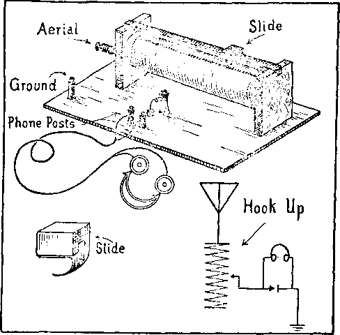

ISi
Golden
A-JOURNAL-OF - FACT HOPE-AND'CONVICTION
'-/S
Aug. 16,1922, Vol. Ill, No. T«
Published every other ■ ESI week at 18 Coneord Street,
Brooklyn, N. Y., U. S. A,
Five Cents a Copy—$1.00 a Year Owada and Foreign Countries. $LM
VOLtTMS 8 ..WEDNESDAY, AUGUST 16, 1022 Nvmbbb 79
CONTENTS of the GOLDEN AGE
SOCIAL AND EDUCATIONAL
Cod volition at Cedar Point ..
In the Light (poem) .............................,.
MANUFACTURING AND MINING “A He, a Horrible Lie” ................................................
Heventy-two Dollars per Day per Miner .....
FINANCE—COMMERCE—TRANSPORTATION
Railroads and Automobiles .....
Brazil and the Foreigner ....................................................717
POLITICAL-DOMESTIC AND FOREIGN
Boer, Briton, and Black ............
A Bird’s-Eye view ...........................................—.............. ...714
Hero Worship ................................................-
AGRICULTURE AND HUSBANDRY
At to Denatured Soil ................ ...715
Farmers’ Skirts not Clear ..........................................-
SCIENCE AND INVENTION Musical Science nnd Pedagogy ..................................
At the Observatory ........ .................................-...........,--719
A Big Tree ......-..........-..........-.........-
Wireless Receiving Set ....................................-.......-
HOME AND HEALTH Exploiting the Sick ----------------------------------------------------
RELIGION AND PHILOSOPHY ••The Death That Never Dies” (poem) .........................
What Do I Owe my Brother? (poem)
After Mr. Roeankrana’ Scalp .......................-
Anther One, Too .................................................. .— 727
“Nothing Extraordinary Happened”
Paganised Chiletlanity ..........................-
Thoughts an Gideon’s .Fleece ....................................-
Btudi® in the "Harp of God” ..................----------
Human Brotherhood (poem) -----------
Fsbllsbed firry other Wednesday at 18 Coneore Street, Brooklyn, N. L, . . . . V. s. A. by WOODWORTH, HUDGINQS and MARTIN CLAYTON J, WOODWORTH . ......Editor
ROBERT J. MARTIN ... Business Manager WK. F. HUDGINGS......Bec y and Trena.
Cntmrtnen and proprietors, Address:-18 Concord Street, Brooklyn, N. Y., - , . . U.S.A Fivb Cents a Copt — $1.06 a Year Foreign offices : British : 34 Craven Terrace, Lancaster Gate, London W. 2; Canadian: 270 Dundas St. W„ Toronto, Ontario; /ItMtrala&iitn : 495 CoDins St., Melbourne, Australia. Make remittances to The Golden Age Bntrred m Beeand-elara witter at Brooklyn. N. JL Wtar the Arf of Merob 3, 187b.
tfte Golden Age
Brooklyn, N. Y., Wednesday, Aug. 16, 1922
Number 70

GENERAL CONVENTION OF BELIEVERS IN THE GOLDEN AGE
CEDAR POINT, OHIO, SEPTEMBER 5-13.
BIRD’S-EYE VIEW OF CEDAR POINT CONVENTION GROUNDS
THE International Bible Students Association, and all others who are believers in the Golden Age about to be inaugurated by the reign of the Lord Jesus Christ in the earth, have planned for a great general convention to be held at Cedar Point, Ohio, from noon, Tuesday, September 5th, to noon, Wednesday, September 13, 1922. All who are trusting for salvation in the precious blood of Jesus Christ are cordially invited to attend and enjoy the blessings that will bo in store. An abundance of able speakers in all modern languages, and a most attractive program is provided.
Cedar Point is situated on a narrow peninsula jutting ' out from the Ohio mainland into Lake Erie. It has the advantages of the lake from three sides. For quietness and seclusion we know of no better place. The grounds are situated some two miles across the bay from Sandusky, Ohio, which is reached by ferry, as well as by a roadway; those who will attend will be people who are interested in knowing something about God’s Word, and it will be a real joy to have them present.
• In 1919 at Cedar Point, seven thousand came from all parts of the country and from Canada and foreign countries. By every method of transportation they quietly stole from their daily tasks, and for a week enjoyed a blessed fellowship that stands out in the memory of all as a time when the Lord was very close. All felt the influence of the spirit as they listened to Words of encouragement, instruction and inspiration, and as they walked and talked about the things of
God, or quietly enjoyed the beauties of surroundings that bespoke the goodness of God.
There is a special reason why many desire to be present at this particular gathering. Never before has the world been so threatened by impending perils at home and abroad—the perilous times have come. Great and earnest elTorts have been made by earth’s leaders to bring order out of the chaos created by the World War and the ensuing revolution and unrest. Publicly and privately the great are assembling to devise plans for the quieting of the disorder and the allaying of the worse things that begin to appear in every direction. But the League, the Disarmament Conference, the association of the nations, and the economic conference at Genoa have only displayed the impossibility of humanity settling its own troubles. The situation grows more difficult continually until it seems certain that the next few years must behold a crash mightier and more disastrous to the present order of things than anything yet.
Bailroad, boat and electric transportation rates are still very high, the cost of living stands at a high percentage above pre-war figures, and wages are low and work often unsteady. But so beneficial are the general conventions that it was decided not to postpone one beyond this y<>ar, and to give ample time for preparation for even the most distant friends in this and for-' eign countries.
The state of the world is such that a catastrophe may take place at any time in the not distant future. If the collapse that threatens is not promptly averted, it is not difficult to see that so disturbed might affairs become that it would not be feasible to hold another convention.
RAILWAY SERVICE
All railroads in the United States and Canada have granted a rate of one and one-half fares for the roundtrip, tickets to be obtained upon certificates presented at the time of purchase. These certificates are furnished by the Golden Age from its office in Brooklyn. Write this office, marking the envelope “Convention Committee,” giving the number who expect to attend; and we will send certificates for that purpose. Where the head of the house attends he may sign the certificate and insert the names of other members of the family who will accompany him. One certificate will do for the entire family. Where one person travels alone one certificate is required. It is better to order more blank certificates than actually needed, because at the last moment somebody else may wish to go.
Tickets will be on sale at all railway stations beginning September 1 and until September 7, inclusive, for the going trip. No tickets can be purchased on the certificate plan after the 7th. When purchasing ticket purchaser will present certificate to ticket agent and buy a round-trip ticket. To protect oneself in case of a lost ticket it will be advantageous at the time of purchasing ticket for the purchaser to enter in a memorandum book the number of the ticket bought and the amount paid for it. All tickets should read from starting point to Sandusky, Ohio, which is the railway terminus for Cedar Point.
SPECIAL TRAINS
The “Golden Age Special” will leave New York over Baltimore & Ohio tracks from the Pennsylvania Station at 7: 50 a.m. (8: 50 a.m., Daylight Saving Time), Monday, September 4; leave Philadelphia (24th and Chestnut Streets) 10:10 a.m.; leave Baltimore 12:10 p.m.; arrive Washington 1: 30 p.m.; rest in Washington until 8: 00 p.m., and arrive at Sandusky, Ohio, about noon Tuesday, September 5. This will enable the passengers to spend half a day in Washington, resting or sightseeing, as they may see fit. The convention of the colored brethren in session at Washington at that time will be addressed by Judge Rutherford at 3 o’clock Monday afternoon, and he will then join the special train for Sandusky.
Sleeping cars will be attached to the “Golden Age Special” at Washington for the benefit of all those who desire sleeping-car accommodations.
All journeying from points south of Washington, who expect to join this train at Washington, should have their tickets read from Washington by way of the Baltimore & Ohio Railroad to Sandusky.
Brooklyn, N. Y,
All persons traveling by this train who desire sleep* ing-car accommodations from Washington to Sandusky will please notify the office at Brooklyn as soon as = possible, and not le*s than five days before starting. -the journey, in order that proper equipment may be ’ procured from the railroad company. The rate for ' lower berth from Washington to Sandusky is $6.38; and for an upper berth $5.10. Berths will accommodate two persons. The rate is the same, whether occupied by one or two persons.
All persons who desire to join this train and who expect to travel either by day-coach or sleeper should notify the office at Brooklyn not less than five days before the beginning of the journey, in order to enable the committee to make necessary arrangements for railway equipment.
AUTOMOBILES
The I. B. S. A. will have exclusive possession of Cedar Point during the time of the convention; hence it will be necessary for all persons traveling by automobile to go first to the Association’s headquarters at the dock at the foot of the main street in Sandusky, where the boat starts for Cedar Point, and there obtain from the. ones in charge the proper certificate w’hich will entitle them to enter the grounds in an automobile.
Sufficient space is provided at Cedar Point for the accommodation of 400 cars in garage, at a rate of $2.00 each for the full time of eight days; and ample space for free parking of cars.
ACCOMMODATION RESERVATIONS
On Cedar Point proper are the Breakers Hotel, Cedars Hotei, dormitories, and a few cottages. After all spape on the Point has been assigned, accommodations are provided in Sandusky for others who cannot be taken care of at Cedar Point. Those who have accommodations in Sandusky will be charged the same rate as those at the hotels at Cedar Point, but will be provided with free boat transportation to and from Cedar Point daily.
All accommodations are provided by the G. A. Boeckling Company, whether at Cedar Point or Sandusky. There will be an advantage to those who take accommodations' in Sandusky in this, that they will be less crowded and will have the privilege of a free boat ride morning and evening.
Every one should bear in mind that accommodations cannot be selected at this convention to suit one’s own convenience, but each must be content to take such as he gets. Everybody will be made comfortable, but we should bear in mind that we go to the convention to give a blessing as well as to receive one. To handle a crowd as large as is expected at Cedar Point, it is necessary to handle it systematically; and therefore each one should be glad to accept the accommodations assigned to him or her.
fa*
August 16, 1922
■. As soon as possible after receipt of this issue write the office at Brooklyn, marking your envelope “Convention Committee,” and state in your letter practie-ally the following:
I expect to attend the Cedar Point Convention during the entire session, or----days, and will arrive——-----
----. I am married (or single), and speak the--- language. I will be accompanied by my wife and----
------. We can occupy one double bed and a cot each for the other members of the family.
If you are single, state sex, color and nationality. Information with reference to nationality or language
signmcnts previously made out; hence the necessity of adhering strictly to this rule.
spoken is necessary because the convention will be
tended by many foreign brethren, and we desire commodate them together as much as possible.
Some of the rooms are equipped for from four persons, all brothers or all sisters. It will help
to
to
at-ac-
ten
us in
making assignments if you will state whether or not you can occupy a room with several others.
The assignment to rooms will be made by the Convention Committee and a card specifying your assignment will be mailed to you in ample time. Be sure to keep this card and bring it with you to the convention; and as soon as you arrive, present the card at the headquarters of the Association at the dock in Sandusky. Upon presentation of this card you will receive in exchange therefor another card showing the amount you have paid and the days you expect to be there, which will be your identification both for room and meals while at the convention.
For convenience all will be required to state at the time of arriving how long they expect to stay, and will pay to the Boeckling Company money covering the time they expect to stay. If for any reason they are compelled to leave the convention before the time is expired that has been paid for, the Boeckling Company will refund the money for the unexpired term. Do not send any money in advance to this office or to the Boeckling Company. All money must be paid to the Boeckling Company at the Association’s headquarters in Sandusky on arrival.
Remember that the I. B. S. A. does not take possession of the grounds until noon Tuesday, September 5, and that no one can occupy a room until the afternoon, and that the first meal which will be served will be supper the evening of September 5. Any one going in advance of this time will be required to look after his own accommodations, as these rates do not begin until the hour above mentioned.
An Information Bureau will be provided at the Association’s headquarters at the Sandusky dock to advise and direct any friends arriving before the above hour.
No one can occupy a room prior to noon on September 5 and expect to hold that room thereafter. The Boeek-ling Company has contracted with the Association to deliver possession of the entire property to us at noon on September 5, to be assigned according to the as-
RATES
Room or sleeping accommodations and three meals per ’ day will be provided at the flat rate of $2.00 per person per day, payable in advance, two or more in a room. This will work advantageously to those attending; for should one lose his pocketbook he will still have his place to sleep and something to eat and a ticket to return.
Friends attending for only a part of the time of the convention will be required to pay in advance only for such time as they designate they intend to stay; and if at the end of that time they desire to prolong their stay, further arrangements can be made on the same terms at the office of the Boeckling Company. Friends residing nearby who will attend the convention during the day and go to their homes at night can procure their noon and evening meals at 50c per meal.
Do not come with the expectation of procuring your own rooms and then eating at Cedar Point at the above rate; for this would be a violation of our agreement with the Boeckling Company.
CAMPING PARTIES
Some have inquired about camping nearby. There are no camping grounds at Cedar Point. In Sandusky, however, the city provides camping grounds for a limited number of tourist automobile parties. Such camping grounds are free, but arc maintained solely for the convenience of motorist campers. The grounds are provided with all sanitary conveniences. For further information inquire at the Information Bureau above mentioned.
FEEDING THE MULTITUDE
Ample provision has been made to feed with three good meals per day all who come, up to 10,000 persons. All service will be on the cafeteria plan. By this means the hotel people arc enabled to serve better food, a greater variety, and greater quantity in much quicker time; and it will not be necessary to stand in line a long while to wait for meals.
HALLS
Seven separate and distinct halls or meeting-places are provided ; and if necessary, as many meetings may be in progress at the same time. Ample speakers will be provided for all meetings. There will be no evening
service, but the evening will be given personal fellowship.
SERVICE
As heretofore stated, arrangements with the Boeckling Company for a
over to rest and
have been made limited number
to serve in taking care of the rooms and eating department. Those who render this service will be required to work not to exceed six hours per day, and not at any time to interfere with meetings as speci-
fied in the program. In consideration for the service rendered such will receive their sleeping accommodations and meals free of charge. All desiring to avail themselves of this opportunity should write this office as quickly as possible. All persons contemplating such service must report the first day of the convention at the Information Bureau and be assigned to duty.
K-
MUSIC
Those who play well on the violin, cornet, and other orchestral instruments, who desire an opportunity of service in this behalf, please come and bring your instruments and report to the Chairman on arrival.
PURPOSE OF CONVENTION
Let ns. remember, that the purpose of this convention is to encourage and strengthen the friends and to build each other up in our most holy faith. Every one should attend with a view of being a blessing as well as to receive a blessing. Remembering our privilege to present our petitions to the throne of heavenly
THE DEATH THAT NEVER DIES
(From a Bible Student 85 years of age, in a poorhouse)
Within the Book, the Bible, souls abound; But no immortal soul is therein found. On all the pages we may use our eyes;
And nowhere see “The death that never dies.”
What things are lost no longer are possessed; Of life, or soul, soul loser was divest.
Refuse this precious knowledge if you can, Soul loser is a dead, or soulless man.
We read “The soul that sinneth it shall die.” A truth so plainly stated why deny? Unwise the hasty teacher who replies, “The wicked die the death that never dies.”
“A Lie, a Lie, a Horrible Lie” By Joseph Greig
WHEN the Standard Oil Company case came up some time ago in Judge Landis’ court in Chicago, this collection of American Beauty roses was fined $29,000,000 for disorderly conduct. Of course the mandate was reversed.
While the trial was under way Frank Monett, Attorney General of Ohio, proved that the cost of manufacturing gasoline was one cent per gallon. Mr. John D. Rockefeller, aged oil magnate, then active head of the oil trust, arose excitedly and demanded to testify. Granted that privigrace, let all everywhere unite in prayer to the Lord for his blessing upon the convention, that it may result to the benefit of his people and to his own glory and ■ praise.
Information has already reached us that friends are . coming from all parts of the United States and Canada, and some from other foreign countries. We are looking forward to this as the most blessed convention yet held; for we are nearer the kingdom than ever before and the Lord’s children should be more thoroughly developed than at any time in the past. All of those who are trusting in the precious merit of our Lord and Savior Jesus Christ will be welcome. Let us come, with a sincere desire and with the prayer that the Lord may bless our fellowship together and send us back with renewed energy and enthusiasm to be his faithful and loyal ambassadors to bear the message of reconciliation at this time of great stress. If we go with this sincere desire in our hearts we shall receive the great blessing we desire.
The silly phrase “The death that never dies,” Is like a kind of fly that never flies, A giver who was never known to give, A liver who was never known to live.
Immortal soul—the serpent’s monstrous lie. Twin sister to “Ye shall not surely die.” The kind of soul the ancient pagans taught, Down to the present by traditions brought.
The blindest blind are those who will not see; Who shun the light and into darkness flee.
And, ah, how deaf are those who will not hear; Who error love, but truth both hate and fear.
lege he is quoted as saying, “It’s a lie, a horrible lie; it costs two cents a gallon.”
At this juncture the ouster proceedings of the Attorney General were squelched, and publicity on the subject ceased. It would have been interesting to purchasers of gasoline if Mr. Rockefeller would have burst into print and given us all the details about this horrible lie. The public would like to know the facts about such things; but alas! we have no newspapers that can give them to us.
y*
L. SOME time ago I sent you a clipping from
O the Benton Standard, a local paper printed *- at Benton, Illinois, the county-seat of Franklin . County, the center of the Franklin County, Illi-f nois, bituminous coal fields. This excerpt, you ~ 'will remember, stated that the “Old Ben” coal I- mine was shutting down. But from present pub-• lications it seems that this mine is running full * force, as well as other mines reported, prepar-‘ ing for what is purported to be an inevitable i coal-miners’ strike.
From the clipping enclosed you will notice that 7,241 tons of coal were hoisted in eight hours. I understand that for this coal the op> erators get $4 per ton or a little more. This 7 means about $28,000 worth of coal mined in eight hours, with 1,000 men; or an output of $28 worth per man.
But this coal costs the consumer $10 per ton here, or $72,410 for the eight hours’ work of the 1,000 men. It is not much wonder that “the boat is rocking,” if that is a sample of big business! That which God gave to humanity is interfered with from one mine alone to the extent of $72,000 in one day. I suppose that if a strike comes we should shed tears for the poor, struggling coal operators.
[The foregoing was written before the strike occurred, and the public is now engaged in the tear-shedding operation. Experts should be put upon this job at once; and if it is found that any tears which should be shed for the operators are being shed for the miners, a way should be devised to collect royalty for the tears thus improperly shed, by adding so much per ton to the price of coal.—Ed.]
Railroads and Automobiles
j THE time was, not long ago, when travel from a. J- city to city and country to country was a very difficult and expensive experience indeed.
" And even those who responded to the call of € the then wild west spent many days and months, * migrating their way through plain and swamp, * enduring untold hardship and unbelievable suffering, that they might set foot on new and better lands. Today the far western areas of the ? United States and Canada are the most pro' gressive and up-to-date sections we have. With, out a doubt the railroad has done more toward e the development and opening up of the hitherto « unknown sections than has any other one thing. - Railroads like many other of earth’s big , things have had their palmy days. No longer j are they the only avenues of transportation. ' Built by mighty men, with the earnest codpera-[ tion of the communities, and often assisted and ; encouraged by “land grants” from the Govern-;• • ment, these lines have one by one been merged " into great systems, offering through-freight and passenger service to every part of the country. Today these very railroad systems are con/’ fronted with curious and yet grave problems.
The motor vehicles have entered our midst by the hundreds of thousands and have opened up [y to the roaming populace every nook and corner of the land, to the pleasure seeker and the busi? ness man alike. Such a new and interesting mode s-y-
By S. C. De Groot '
of travel has not in any way been to the advantage of the rail systems, even with the best equipment, excellent schedules,fast trains.
The automobile takes one into the very heart of the country, where are found the tempting stream for the angler, the wood and wilderness for the hunter, the cities and villages for the merchant, and the market-places for the farmer. This all means a curtailment of the earning powers of our rail systems. Not only are rail systems feeling the result of this new mode of travel, but the church, and especially the rural church, is usually a presentation of empty pews, or more often it has been decorated by boarding up the doors and windows. People have discovered that they much prefer a little “spin” and then a visit with an old-time friend on a Sunday rather than to be obliged to listen to a minister who usually preaches about everything else but the Bible.
There are today in the process of formation gigantic trucking systems, whose aims and efforts are to establish well-connected and excellent service, both freight and passenger, between every metropolis and also between every village and the town corners over this broad land. At the present writing very few districts, cities, villages, or even states attempt to control or regulate the “bus” problem. Buses continue to ply between city and city, grinding the roads
jK
tsk
-s'
•-
to shreds. Certain localities have established the maximum weight allowed to be carried over county roads. Investigation has developed that there are trucks, the weight of.which alone falls little short of the prohibitive weight. Dangers arising from accidents are gradually forcing states to demand that all truck lines and drivers be bonded for the protection of the public.
Railroads are asking permission of the Interstate and State Railroad Commissions to “junk” branch lines. Not long ago these very branches were counted as a valuable asset to the industrial life of the railroad; today they are like a millstone around their necks. Trucks, automobiles, and good roads are the cause. Unlike the ordinary business man, who if he conducts a business and finds it unprofitable decides to close out, the railroads find that when they file application with commissions to discontinue these branch lines hundreds of telegrams, letters, and personal representatives put in objections, demanding that such ideas as the discontinuing of their railroad service must be abandoned.
Very few people have any adequate conception of the railroad traffic problem. Take* the passenger end of it, which the railroads consider as a side-line. Many suppose that the rail fares are fixed and determined by the agent or the managers of the roads. Not so. A ticket agent is not permitted to issue a ticket, even though he may have figured out the correct mileage and multiplied it by the rate per mile, unless he has received authority to do so. He can sell tickets to only such places as he finds listed in rate sheets or tariffs with which he has been furnished, which show the correct fare. These rate sheets must first be carefully compiled, and then submitted to the Interstate Commerce Commission for approval. For example: On a fare from New York to Los Angeles before a ticket can be sold at the computed fare it must be filed with the Interstate Commerce Commission and the State Commissions of every State through which the passenger would
travel. These must be filed at least thirty days .3 before they take effect; and if the slightest error appears, the whole thing is rejected and the ' same process gone over again. '
Railroads have organized themselves intervarious associations, such as the New England, ’ Trunk Line, Eastern, Central, Southern, Western and Trans-Continental Associations. Each maintain their own offices, a chairman, and pub- ' lish rate-sheets for the roads involved in theik- ' territory. For instance, we have Chicago, New . York, Detroit, Cleveland, etc., rate-sheets showing fare from these cities to almost every town ' and city in the United States. These passengfer ■ associations decide as to excursion fares, tourist fares, clergy fares; as well as reduced fares for ' inmates of Soldiers Homes, charity rates, etc.
One large rail system is experimenting upon the “bus” problem themselves. They have established service between certain cities and are protecting their passengers with the same pro-teetion that is accorded to rail passengers. If the experiment is a success, it will be entered in full “swing.” A similar proposition confronted the actors, actresses, and the theatrical world in general some years ago when the “movies” were introduced. The “movies” provided a novel entertainment as such a low price that the attendance at the “regular” attractions fell off so that the best actors cried out, “What shall we do?” For a time they fought these new methods of entertainment, and finally what did they do hut enter the “movie” business themselves! Today we have the best of talent represented in the film productions. Thus they saved their lives. So it is with the railroads.
We are fast entering the new era, the Golden Age. Conditions will be entirely different. Transportation facilities will call for the travel of every human being to all parts of the earth to view its wonders. The same provision will be made for the billions that are soon to come from out their graves. Therefore with all unselfishness let all — railroads, radio, and airplane devotees — prepare for this grand day.
Bii Chas. H. Miller By Maurice Humes
WE TAKE several papers in our home, but T WISH to express my appreciation of this there is none that we like so well as The wonderful publication; for to me itAs truly . a wonder in its fearless statements of the truth
on any subject discussed.
ft/
Boer, Briton, and Black By P. J. de Jager {Transvaal)
So
ex
fe''
s.'
pi
N The Golden Age, December 7, 1921, page 151, a slanderous statement is made by Henry Rickards, viz., that the Boers of this country have a well-known saying where blacks are concerned—“If I want a slave I beget him.” He says that this is just what happens. This remark in your excellent magazine, to which I am a subscriber and also ardent admirer,—because truly it is epochal in its message and I am sure the only magazine on earth today that can give the true explanation of the significance of the events of our day {The Watch Tower of course excepted)—this remark, I say, gave occasion to a Socialist paper of this country to refer to you as “those Biblical liars” or words to that effect.
By way of correction of this statement I wish to state that I myself am the son of that section of the inhabitants of this land termed Boers. I am therefore of that section which some time ago would have been termed “Boer,” especially since settling down into the two provinces of the Union which formally constituted the Boer Republics before England deprived them of their independence in the Boer War of 1899-1902.
I was born in Cape Colony, a British subject; was brought up among the so-called Boers (a word meaning farmers), have traveled much in all the provinces of South Africa; but from Mr. Rickards I had to learn for the first time that degrading statement. It is well-known that peoples of other lands have generally been very badly misinformed concerning the Dutch of this country, so that one sometimes comes across the story how that when the British officers during the Boer war first were brought into touch with an ordinary Dutch lady of the average educated type they were surprised to hear such a one proudly claim to be a Boer herself.
The reason for this can to some extent be sought in the fact, of course, that South Africa has a wealth of mineral deposits, especially gold. It therefore suited the capitalistic wing other black tribes till the Boers known as the “Voortrekkers” (pioneers) broke their power. One of the annual public holidays of this country is Dingaaus Day, on the 16th of December, in celebration of the day when the power of the Zulu king of that name was shattered by a few hundred of these “Voortrekkers” in 1838. <
of what constitutes the “unholy trinity” in England today, in former days to misrepresent those who had preceded them in gaining possession of the territory already occupied by the black-skinned races who at the beginning of the 19th century were murdering each other on a huge scale. Specially did the Zulus and Mata-beles prove dreadful marauders against the
713
As to "the well-known brutality of the Boers,” it is also a well-known fact that the stories circulated on this matter, especially in past days, were invented or vastly exaggerated. I say well-known—a statement which must be limited to those who have taken the trouble to look into the history of this country as written, e. g., by Dr. Theal, a writer of great fairness and impartially. For the little history of this country taught up to quite recent years in the schools of the Cape Province was very limited in its extent and by no means noted for its partiality toward the Boers.
Recently matters have changed for the better. It is true that the Boers are considered very strict disciplinarians in their attitude towards' the black peoples of this land. Individual cases of brutality will naturally have taken place. But that they are specially brutal as a people towards the colored races is surely not claimed by those who have taken the trouble or had the opportunity to find out for themselves.
I have not the statistics here at my disposal to substantiate my statement now following, yet from a general knowledge of the history of this country, I make bold to say that more blood has been shed under British domination among the natives of this land, than under Boer domination. .
Air. Rickards is very badly informed. So have you been when you in your article of May 26, 3 J 920, gave circulation to certain statements about pass laws and regulations and lack of native education in this land.
A on made those statements about the Cape Colony, now Cape Province, where politically the colored races have equal rights with the white races, as far as is known to me, in that they can vote and may even have a native representative in the Cape Provincial Council; they once actually elected one who had session in that Provincial Council. For the Union Parliament they can vote but not send a native representative (the Union Parliament is representative of all the Provinces of the Union).
. $ kiS
5-
In fairness I shall state that these privileges in the Cape were secured mainly through the agi- ’ tation of English negrophilists in the earlier part of the nineteenth century. These privileges are forbidden them in the two Provinces that formerly constituted the Boer Republics. There it is that the pass laws prevail, though I doubt whether all you say of these laws is correct. Let it be noted, however, that in the Province of Natal, which is predominantly English as far as the whites are concerned, these pass laws and regulations are also prevalent and they are not a dead letter of the law.
A question closely allied to this one is the Indian problem. In Natal the Indians, though constituting a very big portion of the population—I believe over 100,000 — are deprived of political rights. There is a movement now to deprive them even of their municipal vote. I do not discuss the fairness of this treatment here. I am only mentioning these facts to prove - that as for trying to keep the colored or black races out of the privileges enjoyed by the whites, the predominant white races of the land can hardly afford to bring up accusations against one another—the pot can hardly afford to call the kettle black.
I am on a tour through the country, and therefore write from memory, not having even your May 26, 1920, issue with me for reference. If you desire a detailed article on these questions I may be able to secure an expert’s statements on them for you. I guarantee, however, that my statements are substantially correct, and that as far as I remember some other of your statements in that article of May 26, 1920, are incorrect inasfar as they concern this country- .
Knowing your fairness and your desire to publish the truth and nothing but the truth, and that in your case misstatements are only due to the fallibility of all human undertaking I beg a little space in your columns for these corrections.
5*
THE old hatreds between Catholics and Protestants still remain. Everywhere lines of battle are drawn. In Ireland the fight is on and imminent. Anti-Catholic Societies are forming and appealing for help. Catholics are retaliating with the black list.
The R. J. Reynolds Tobacco Company has closed its doors to all Protestant help. Protestants, therefore, are boycotting all tobaccos and cigarettes bearing the R. J. Reynolds tag. This includes some of the most popular styles such as Prince Albert, Camels, R. J. R., etc. Large shipments have been returned and orders canceled, it is stated.
We do not use the weed, do not believe that an earnest Christian would continue its use, much less manufacture it to dope his fellows with and create a disagreeable stench for the nostrils of the more cleanly people. A man who uses tobacco is not fit to kiss a goat, in my opinion.
The greatest day will be the day after the wiping out of religious turmoil, and the useless and expensive habits of uncleanness that go along with it. “Let us cleanse ourselves from all filthiness of the flesh and spirit.”
Depopulation of France
TAEPOPULATION of France is feared,” says a headline. At the present rate of degeneration, French authorities say that in forty years’ time their numbers will be reduced to twenty-five million. To offset this, prizes are offered to working men wdio father the largest number of children, “legitimate or illegitimate, annually.” They w’ant soldiers; and with them “a baby is a baby, whether born in wedlock or not.”
Poor, sterile France! A thousand years under the influence of popery has not been very uplifting. And this is the France that influences the course of Christendom, so-called. This is the France that the resources of the American people are plighted to “save.” The strong and virile peoples of Germany and Russia are discounted for that. England and America hang on her word and policies. Her suicidal military mania drags them down, down, down! “Her house is the way to hell, going down to death.”
Hero Worship
A GREAT ado about nothing was recently pulled off in France. It was about Joan
of Arc, who is reputed to have “saved France” in the fourteenth century. The headlines of newspaper articles state that Joan was glorified by all Paris. The chief glorifier, the Bish, op of Paris, was dressed in his most gorgeous robes, and took the occasion to bless all the glorified throng that glorified Joan.
Such reports are disgusting. Dead heroes and heroines are looked back to as gods. No wonder the Prophet exclaims: “Cease ye from man, whose breath is in his nostrils; for wherein is he to be accounted of?”
And hero worship is still practised here. “Tribute to the soldier dead of three wars” features Decoration Day. The cause of war is still hallowed, and few will admit that war is wrong as far as our part in it is concerned: “We did it! And we did the right thing at the right time! These noble men laid down their noble lives in a noble cause! And say, but my, they were fighters!”
Under Christ’s kingdom they will look back in amazed horror at the heroes of today. The Fochs and the Pershings, now lionized, will be, next to the preachers, the smallest pebbles on the sea shore of humanity. “The Lord of hosts hath purposed to stain the pride of all glory, and to bring into contempt all the honorable of the earth.”
High-Church Protest
THE Church of England and the Church of
Rome protest to Lenin against the jail and threats of execution for the “Most Rev. Dr. Tikhon, once patriarch of all Russia.” Doubtless England and Rome see the handwriting on the wall. The expose of the old Russian State Church, with its frauds practised for centuries, is only an intimation of what is in store for all man-made, and man-controlled churches.
Lenin deserves the plaudits of the universe for opening the “shrines” and exposing the sawdust bodies claimed by the Russian Church officials to be genuine imperishable bodies of “saints.” That was a rank odor. “Of all the smells we ever smelt, we never smelt a smell that smelt like that smell smelt.” The same odor of death is in all of these systems, and they will be exposed and destroyed.
Religious liberty and protection of church property in Russia is also asked. Liberty to proselyte, and not liberty for the Russian Church is what is meant. What does England or Rome care for the church and church prop-ery in Russia, except to thwart divine justice and protect their own church property?
Lenin is an instrument of the omnipotent God to destroy the rotten church government of Russia, even as Napoleon was used to break the temporal power of popes in France. Let others take notice and warning: “I will cause the arrogance of the proud to cease, and I will lay low the haughtiness of the terrible.”
Prayers Unheard
THE Pope’s request for prayers for the suc--*• cess of the Genoa Conference seems to have been unheard. The trouble is that the world that did the fighting is still unrepentant, and the efficacy of such prayers would be nil. A gun in the pocket and a Bible on the table make access to the throne of grace impossible. Even the Pope, who aims well, at least, has much to learn and unlearn. No well-informed Christian would tell the Almighty what to do. Success— as we might view it—would likely antagonize the divine plan. Thy will be done, not ours, is the proper attitude of mind. “What hast thou to do to take my Word into thy mouth?” “Whoso stoppeth his ears at the cry of the poor, he also shall cry himself but shall not be heard.”
Mb. Editor: Every time nature is inter, fered with, we interfere with God Him
’ self. In reference to a small article, “Something t for the New Earth,” in the February 15th issue ’ of The Golden Age, it might be pointed out ■ that to deplete the earth of any agency which
£ prevents gluten in wheat, and which will “keep
- blood from coagulating”, is not a service, but a handicap on nature. How will blood cease
By Frank E. Dorchester,, N. D., 8. P., D. C.
flowing if its ability to coagulate is destroyed ?
“The wonder worm,” etc., with their instinct for things natural to them, avoided earth of this character.
Artificial improvement of the soil may or may not help man. But as our knowledge of nature’s laws is small, we are very liable to injure the race by interfering too much with nature’s private laboratory.
Farmers’ Skirts Not Clear
F'* '
ONE of the many admirable features of The Golden Age is, in my opinion, the open i . forum which it affords for the discussion of . matters of public interest. I note that in your magazine you have presented some articles praising the farmers’ contributions to the wel-■ fare of society, and that you have also publish" ed occasionally something in the way of criti-
i cism. The latter position is unusual, but it is ' just; and as I chance to have considerable acquaintance with this subject, I wish to add .. something along this line, so that, if it should
’ come to the attention of any of the class criti-
: cized, he may do what lies in his power to b:d-
ance his own interests with those of his help. ; The position is this: The farmer is a petty
capitalist and a skilled workman — an expert agriculturist. The floating laborer has merely 1 his strength to sell, which he sells, like any
; other business man, in the best market. The
farmer resents this, considering that the labor-5 er ought to consult the farmer’s interest rather than his own, by working cheaply.
The farmer is a small capitalist, with all a capitalist’s anxiety to make profits. lie refuses ■■ to recognize his employe’s right to do the best possible for himself. The floating worker is i skilful at many trades, but expert in none. The exigencies of his occupation require him to _ jump from job to job. 11 is periods of employ; ment are intervaled by longer ones of idleness.
He is perpetually haunted with the nightmare “ of physical breakdown, sickness, accident, with the almshouse at the end of it, mendicancy, the squalid dreariness of the “flop-house,” a living gleaned from garbage.
y The farmer is a member of the “comfortable
classes,” well-fed,warmly-clad,well-housed. The - casual laborer, when he is worn ont, drifts to
j- hideous hopelessness of life in the slums.
Our industrial system exists on a surplus of casually employed labor. They have no opportunity as a class to obtain exportness or steady work. Tiie farmer cannot dispense with this < surplus, but he hates the necessity. When the harvest season is ended he is anxious for the “hoboes” to be gone. He cannot use them in his regular farm routine. Some few genuine farm; hands he can use: but such of these as go to the
, harvest fields go generally for the experience,
■ and then return to better jobs in their home
y ' neighborhood.
(Contributed)'
The farmer is notoriously prejudiced against labor. When the w ar took away his sons he invited any kind of help to come and live with him. When they came he was unwilling to make reasonable allowance for their inexperience and physical inferiority to himself.
When the war was over, he jumped to the conclusion that men were plentiful and frequently got men out of the employment offices to try them out, just to indulge himself in the gratification of hiring and firing several men in succession. Many of these men were familiar with farm work, but left it in disgust, swearing they would never work for the farmers again. Many of them were men familiar with farm work hut not so expert and up-to-date in it as the farmer and his sons. The farmers grew more exacting and unreasonable as time went on.
In former times, farmers generally treated their men well and much as equals. They regarded “working out” as a kind of apprenticeship to farming, as the “hired man” generally nourished the ambition of some time farming for himself. Today few of them expect to do so; for land values are too high, and modern farm equipment is too expensive.
Today there exists more or less of a social chasm between the farmer’s family and the “hired help”; and the latter are made to feel it. They may eat at his table, but are plainly regarded as social inferiors. Many farm-hands prefer the systematic methods of the factory, where their time after working-hours is their own, to the petty tyranny of farm life, where often their very sleep is begrudged them.
JMost people realize that farming is no sinecure, that the farmer is one of society’s most valuable members, and that his business is more or less of a perpetual gamble with the elements. He has been undervalued, exploited, cheated, and defrauded to a scandalous degree.
I consider that Pastor Russell’s estimate of the farmer was a very just one as applied to past conditions. Since it was written the farmer’s character has deteriorated, and in direct ratio to his prosperity. He is now class-conscious. His sympathies are restricted to his own class. He has all a capitalist’s intolerance for labor, and the expert’s contempt for the unskilled.
His creed is to keep a sharp lookout that no
F-
fc t
one takes advantage of him. He drives the hardest bargain he can with his “hand,” but disputes the latter’s right to do likewise. He is apt to be perpetually jealous that the hand is not earning his keep.
He complains that he cannot get steady, dependable hands, but will hire men by the month when he only wants them for extra hands during a rush season, so that he can get them cheaper. He claims the right to discharge arbitrarily, but expects his hands never to quit when it inconveniences him.
Under the inspiration of farm literature and his various associations he is systematically copying the attitude of big business toward labor, demanding greater speed and accuracy, greater expertness and efficiency. No matter what the prices of farm produce are, he habitually tries to keep wages down to the old levels. In his small way he imitates big business’ enslavement of labor and applauds the same.
Perhaps the strongest indictment against the farmer is that the system of individual farming is inutilitarian and wasteful. It is surprising that big business has not taken over agriculture and organized it to eliminate this quite archaic, wasteful system. Of course this probably would not benefit the public much under the present profit system.
It is natural that every class should see its own side of the case more clearly than the other. The farmer has a valid grievance and a right to present it, but he is fully as unfair to his labor as any other class of employers, or as big business is to him. He is also as avaricious and self-centered as any other class. In other words, he is no whit better than his neighbors and has helped to sow the crop of discontent which culminates in universal anarchy.
The farmer's attitude toward his help is so familiar to me, and covers so much abuse, unfairness, and sheer piggishness, that it is difficult to make allowances for the farmer’s point of view, without balancing the same by his obtuseness concerning his own unfairness. I think that society is in the way of being destroyed by its own debris, and that the farmer contributes to making this human debris. He also is an oppressor of the poor, wherever he himself enjoys prosperity.
THERE is no country on earth where the foreigner is so free as he is in Brazil. Foreigners are allowed every privilege. Most of them acquire immense wealth, and conditions are most favorable for them.
Most of the important companies here are financed by foreign capital; and it seems that foreigners have taken control entirely of the business and industry of this country. American business here has been injured more than any other, caused principally by exchange and by their way of doing business. German business just now is very prosperous; they seem to have full control of the market. They also have a better way of doing business than have the American and Britisher. When they present a sample, the purchaser knows that the article he receives will be like the sample. On the other hand, the American is more exacting in payment; but when the article arrives, it is generally far inferior to the thing ordered. When complaint is made the reply is: “We were out of that particular grade, at the time of filling the order.” And that is all the satisfaction given. This is destructive to trade. The British article is always considered the best, but their prices are also exorbitant; and the British are very haughty in their manners toward the Brazilian. Such an attitude, though despicable in itself, is of much importance where the good-will of trade is concerned.
There are many firms that have closed, and many persons are out of employment in Brazil. But no one is starving, and those who are unemployed could find something to do. Here as elsewhere people like the cities, like the comfort and amusement found in the town, but have not the moral courage to go into the virgin forest, face its perils, and make homes of their own.'
The failure of some firms was inevitable, caused by exchange and after effects of the war. But others failed for lack of foresight on the part of the directors. Some “packing houses” are closing; why? Scarcity of live stock for butchering. Why did they not start stock farms twenty years ago?
TO ALLUDE to musical science is no more out of the ordinary than to make mention of mathematical science, pedagogical science, mechanical science, or some of the numerous other branches along which truth may grow and develop. All the branches of human learning and skill have made much progressive improvement in recent years. Thus it has been with the science of music. Music is more than “the concord of sweet sounds.” Those who think of it in the light of such a definition have only a hazy idea of what music is. This point I will seek to clarify in this article.
It is mainly because the science of music has been so obscured by the mist of superstition, ignorance, and credulity of past centuries that many people regard its study as something exceedingly difficult and at which only a few— the talented—may hope to make a success. This idea is not based upon intelligent information. There is a strong correspondence between the art of literature and that of music. It is only ‘ by careful study and application throughout childhood that the average person learns to read and interpret the thought of various writers. Only a few’ become literary geniuses. So it is in music. Only a few' under present impediments may hope to become great musical performers and composers. However, almost any one possessed of an average mind may learn to play and interpret written music with no more effort than he learned to read intelligently.
Much depends, however, upon the method of instruction. As usually taught, pupils become mere mechanical or gymnastical performers. They may play correctly familiar melodies or airs which they have heard one or more times, but they are unable to play and interpret music with which they are unfamiliar. That mode* of instruction is best, which, as soon as practical, teaches the pupil to become independent of his instructor and to teach himself. To accomplish this end in musical pedagogy the pupil should at the beginning be taught the reason for each step taken and how music is constructed and interpreted. It is a mistaken idea to claim that musical expression is merely a matter of emotion or feeling. No one can correctly interpret a musical selection until he first has a knowledge of its construction.
In music notes are grouped into divisions
called motives, phrases, periods, etc. The performer must interpret the last note of a phrase so that his hearers may recognize it as such, and not as a part of the phrase following. To do so wrould be much the same as reading a sentence and pronouncing the first word of the sentence following as though it were part of the preceding sentence. In musical expression one cannot be guided by expression marks alone, as these are merely warning signals. Hence one must first understand the law’s which govern expression in all music. For example: One should know that the measure-bar conies between the two chords which form the final cadence of every musical selection. If this law is understood one can determine for himself whether or not a piece is correctly barred. The purpose of this bar is not to divide music into motives, but rather to indicate the melisma note, i. c., the note to be accented in the motive phrase. Z ’
Thus I might continue to point out the erroneous and hindering faults of the average musical instruction. But the foregoing is sufficient to awaken the mind of the thinking individual to a greater appreciation of what the future surely holds forth. The ability to play and interpret music is not only a great pleasure and satisfaction to the individual, but also furnishes pleasure and enjoyment to those among whom he lives and associates. This is true because there are so few who can play music with expression. Yet every individual has a many-sided mind, capable of development, under proper conditions, along all sane lines of human endeavor. Shortly, in the Golden Age now dawning, each individual will become no less a musician than the very greatest of our musical performers-—he will be their superior in every way. He vull be enabled to excel these past geniuses not only because of the change in environment, but also because of the superior instructor whom he will have—the Christ. There > will at that time be every incentive to man’s growth and development. His instructor will be absolutely reliable and will take as careful interest in his most backward pupils as in his most brilliant ones. Thus progress will continue until there exists the greatest to be desired equality—the equality of intellect.
When this glad time for which the whole creation now groans in travail swings into opera-718

£-
St
Ki
tion, the people throughout the earth will break forth into, singing, welcoming their righteous King, saying: 'This is our God, for whom we have long waited.’ (Isaiah 25:9; 35:10) The ransomed are the people in general. When the glorious work for which the kingdom was inaugurated is completed then every individual will he enabled to sing praises to His name. Thus when the kingdom is delivered to God the
Father, earth’s whole creation may join unitedly in a hymn of harmonious melody and there will be no discordant notes to mar its beauty. Hasten the day when earth’s tumultuous dis- -cords may cease—when its inhabitants will have a listening ear for the ten-string Harp of God. Then will follow the climax of musical science when earth’s cadence blends harmoniously with the music of the spheres.
At the Observatory By E. Schutzbach {Switzerland)
3
£ ENERALLY speaking, night is not man’s t kJ friend. It unfolds, however, when drop-
L- ping down cloudless, a wondrous beauty. In
Z solemn splendor it vaults its starry canopy over f weary earth; for night also would like to bring P joy into man’s heart, as radiant sunny day likewise does in its own fashion. While the latter 'f' is able to instil into man a joyous and happy frame of mind, the effect produced by the starry J4' heavens at night is of a well-nigh fascinating kind. It could not be otherwise; for men, in s viewing it, have some foreshadow of the infinity of the universe and with that, at the same time, * some of the majestic wisdom and greatness of the Creator.
k But if just the starry heavens, even when ?- viewed with the unaided eye, elicit admiration, Z what a rapture then will be evoked by the won-
/ ders of creation, opening up by means of a
great telescope!
c- It affords, indeed, particularly great delight / to be ■ stationed at an Observatory, and from there to be given an insight into God’s sublime . wonderworld and workshop. The mind is soar? ing upward into the infinite spheres of the ex-
k panse of the universe — laying aside all the smallness and narrowness of everyday life, for? getting time and space.
v It was nine o’clock in the evening at the Ob-=' servatory. Night had just lit her magnificent - celestial luminaries, the glittering constellations sending down, as it were, friendly greetings—
1 majestic Orion, with its striking giant suns: Betelgeuse, radiating in wonderful roseate _ light, and sparkling Rigel; furthermore, Taurus > with its reddish glowing iris Aldebaran; the ' lovely Pleiades group with the fourfold main . star Alcyone, Great Leo with Regulus, the “re' gal one,” etc.
The telescope was adjusted at magnificent Vega, the main star of the Lyra constellation It offers a wonderful sight. The star sparkles as brightly as gold out of the violet-blue glory surrounding it, so that the eye can hardly break away from this giant brilliant in the heavens.
Now the rubicund gleaming Arcturus, the principal star in the Bootes constellation, had to suffer observation: a red-sparkling sun, the first of the fixed stars to become visible in the early nightly heavens. Bootes is one of the most resplendent constellations and is easily discerned, owing to the fact that Arcturus, in connection with two other stars of the same constellation and the nearby principal star in the Crown —Gemma—form a distinct Y.
Then the Professor called attention to the planet Jupiter, encompassed by the telescope. It shines forth like a sun, and its brilliant radiancy bespeaks a light of its own. This gigantic celestial body which, according to its cubical contents, is 1,270 times greater than the earth, and of five times greater distance from the sun than the earth — namely, 480,000,000 miles — offers an enchanting sight with its interesting zones and the four visible moons, resplendent like miniature suns. The moon next to this mighty planet seems to be surrounded by a bank of clouds; it is a little larger than our earthly moon. The second and smaller one glimmers in bluish fashion; the third one is the greatest and also brightest satellite, of a yellowish color; the fourth one outshines at times the other ones, and is encompassed by a beaming veil of aqueous vapor. In addition to these four moons there are five smaller Jupiter satellites. All these were assigned their rotary orbits by the Creator. Jupiter, this mighty celes-, tial body, resplendent in golden radiance, together with his numerous company of moonchildren, revolves round our sun, his period of revolution equalling nearly twelve earthly years, his astronomical day, however, being only of 9 hours and 55£ minutes duration.
Now another wonder of the heavens, from amongst millions of others, was made to pierce into the eyes of the great instrument: Albireo, in the constellation of the Swan. The cupola begins to turn, until the desired object may be discerned. Albireo is one of the most beautiful double stars — a double sun, the one beaming in golden rays, the other one in blue. “Two suns controlling each other,” interpreted the Professor. There are known by this time no « less than thousands of such double stars, so that it might seem quite natural to presume them to be the rule, and our solar system with a single sun to form an exception.
Not only did the telescope reveal such double and manifold suns, but also the spectroscope. One could observe that certain lines of celestial bodies, doubling up periodically, are splitting up once more at further periods and thus disclosing fourfold systems.
It is true, though, that one has to make a distinction between physical double stars that belong together and thus form a solar system in itself, and the optical double stars, which in reality are a great distance away from each other and just happen to appear in the same stretch of vision. Gamma, for instance, in the Andromeda constellation—a sparkling jewel in the heavens—is a triplicate star. But it is only the telescope that reveals its wondrous beauty; its main star gleams in a golden topaz-like light, while its double companion radiates in a beautiful blue lustre, after the fashion of the sparkling sapphire.
“I really wonder, Professor,” some one asked, “how on earth it is possible that in view of such wonders of the heavens a personal Creator could be denied?”
“True, sad to relate, it is quite generally a matter of fact,” replied the Professor. “Even astronomers are no exception. Many, to be sure, concede that the marvelous structure of the universe is such that it witnesses to having been brought forth by a Supreme Intelligence, with an infinite creative power at His control. It is a fact, likewise, that the greatest scientific explorers—the founders of natural science—have professed that there is an all-wise Creator, proof of whose existence would fbllow just as necessarily out of the whole continuity of th& natural phenomena, as the presence of a power of attraction in the sun appears from the revolution of the planets around the sun in accurately fixed orbits. Man’s reasoning mind is fully justified in becoming indignant when, having viewed and contemplated and admired the beauty and symmetry of the starry heavens, it is confronted with the bold folly which dares to ascribe all this to accident and blindly-working natural powers.”
Meanwhile the telescope had been adjusted to the globular group of stars in the Hercules constellation. “A universe in itself,” lectured our instructor. What a grand feast for the eye I “Stars as numerous as sand,” some one fittingly remarked. Yea, sands of suns; for every little grain of sand represents an immense sun, around which a host of planets revolve. It glimmers like pure golden and diamond granules. The distances between the various stars, thousands in number, have been computed at forty light-years, and the distance of the whole cluster of stars from the earth at a thousand light-years, a light-year meaning the distance that light travels in one year.
(Light travels at the rate of 186,400 miles a second. Hence light travels within one year a distance of 5,880,024,310,000 miles—5 trillions, 880 billions, 024 millions, and 310 thousands of miles. A ray of light, therefore, would be able to run nearly eight times around our earth between two tickings of the watch. The fixed star situated nearest to our solar system — Alpha Centauri — is approximately four light-years or 21,747,950,000,000 miles away from us, or 277,000 times as far as the sun. Using an express train, it would take us 1,250,000 years to reach that star.)
To a keen eye this cluster of stars presents itself just like a small bright spot in the nocturnal heavens. One knows today more than 700 of such groups of stars. In many of them the stars are grouped so closely together that only from the granular appearance may a deduction in favor of the presence of a group of stars be drawn. They are, as observation teach- ■ es, organized systems, in reality each one a uni- 1 • verse in itself. ' "
11
s
A
■S
And, lo! small doubting minds Deny the Master of these worlds/*
cited the Professor. ‘1 ■wonder if, in addition to the earth, there may be yet other celestial bodies inhabited by intelligent beings?” was asked/'Re-garding such a proposition we have not the faintest point of information,” replied the Professor, 'Taut I agree with Snyder, when he said: ‘Only a fool could believe that in infinite space the boundless creative powers of the universe would have led to the formation of just one single inhabited world receiving its light from one sun.’ To be sure,” continued the Professor, "the supposition that impersonal forces create personalities and that the marvelous cosmic structure is an accidental product of irrationality, we leave to those incapable of reasoning.”
Then, in order to emphasize what he had expressed, he adjusted the telescope on a part of the Milky Way, in the constellation of the Swan, composed of millions of suns, in close compactness with one another.
A fairy-like splendor unfolded itself to the astonished eye. The nebulous glimmer of the Milky Way unravels in this powerful instrument into numberless starry suns. Profoundest reverence for the Creator of all these magnificent wonders of the heavens in the infinite cosmic space grips the heart of the spectator.
Majestically the Milky Way, appearing like a colossal glistening band, ascfends in an oblique way toward the Equator, sweeps in a powerful curve from horizon to horizon, and continues its course also among the southern constellations, so that this whole mysterious celestial phenomenon forms, as it were, a coherent girdle of light, though of a varying width.
The great astronomer Herschel computed the number of the fixed stars of this belt of suns, discernible through the big telescope, at 20 mil- lions. Among them are many delicate nebulous cloudlets, which even the most powerful optical instrument is unable to disentangle as stars. By the aid of the spectroscope, however, which gathers and dissolves each ray of light into its component parts, it is in many cases feasible to use the radiation of light as a basis from which to draw conclusions as to the character of the cloudlet of light. For if the spectrum analysis discloses a so-called emission spectrum consisting of bright lines, the nebulous matter has for its component parts a glittering mass of gas; on the other hand, however, in case the spectrum is a continuous one, it consists of stars or suns. In this case it is a group of stars located in spheres immeasurably remote.
Yet this Milky Way, which forms an arch over us, and to which also our solar system has the honor to belong, is by no means the only one. Thore are in existence, as brought to light by more recent, observations, quite a number of them.
Just now the telescope was adjusted at such a Milky Way System — the grand mysterious nebula of the constellation Andromeda, the remoteness of which from us equals 300,000 lightyears, and which we may observe from the earth in a pronounced lateral direction. The aspect presenting itself to the eye is matchless in its beauty; and the mere thought that here we have to deal with a four times greater Milky Way than ours, is absolutely overwhelming. Its diameter is tantamount to 25,000 light-years. Since its spectrum is a continuous one, this nebula is composed of numberless millions of radiating suns; and it seems to be quite likely that planets and moons are revolving around these suns. Among the brilliant sparkling stars which constitute this ecliptic ocean of light, there prevails unmistakably, as everywhere in the visible creation—in microcosm as well as in macrocosm —an infinite manifoldness, which reveals the wonderful wisdom of the Creator and Master, who sits on the throne of this infinite universe and governs it all.
“I wonder if the entire universe is likewise under the control of the identical laws of nature as we know them to govern our solar system?” was asked. Following a brief pause of reflection, our Professor replied: “This would apply, at all events, to the fundamental eternal primeval laws; although these, to be sure, in view of the great multiplicity prevailing also in the world of fixed stars, may assume some varying and more complicated forms. We may, however, safely assume that not all the laws of the universe are known to us. It may suffice, for instance, to call to remembrance the physical double stars and the threefold or manifold solar systems with a joint centre of gravity. Or we may, for example, take a look at the planet Uranus,” said the physicist, while at this juncture he made this queer fellow peer into the big eye of the telescope.
Uranus presents a strange, and yet somewhat beautiful sight. Lacking the golden radiance of mighty Jupiter, he presents himself to
722
us in a somewhat sombre sea-green attire; and only feeble are his glittering greetings. His four moon-children—named Oberon (surrounded by a Saturn-like ring, a novelty in astronomical range of science), Titania, Ariel, and Umbriel ■—move retrograde; likewise also do the eighth moon of Jupiter, the ninth one of Saturn and
tation or force of gravity—chain them irresistibly to their respective centres of control; and all the Milky Way Systems, formed by mighty’ and numberless suns and organizations of stars, are in turn nothing but parts of a still more ' boundless system, revolving around a common central body. The great astronomer Maedler . C
the satellite of far-off Neptune. Then Uranus accepted the quadruple star Alcyone in the Pie-
' has his small moons, giving off but feeble light, revolving around his poles. Moreover, taking the viewpoint of Uranus, our day-star, the sun, rises in the west and sets in the east. Now these are, to begin with, a few irregularities and peculiarities in connection with a solar system, which render a simple explanation as to its formation somewhat difficult.
But notwithstanding such apparent deflections from the normal status, all celestial bodies —whether suns, planets, moons, or even entire solar systems—move by no means along paths of their own. Invisible ties—the laws of gravi-
iades group as the optical central point or central sun of the entire universe.
Nowhere in God’s marvelous structure may one observe any end or limit, but rather an unfathomable depth of infinity and boundlessness, wherein human conception fades away. The structure of the great universe, by its magnitude and infinite manifoldness and symmetry which confront us everywhere, excites amazing admiration. Eternity is not sufficient for the comprehension of all the wonders of the Supremo Being. They all praise and glorify the matchless wisdom of their Architect.
IN ONE corner of the large “Museum of Natural History,” in New York, stands a section of a mammoth tree, reaching from the floor almost to the ceiling. This slice or section set on end is sixteen and one-half feet in diameter inside the bark, and was cut from Mark Twain’s big tree. It is just one sample of many like trees in the southwestern section of the United States and tells the story of the sequoia.
This genus of gigantic trees of the pine family, including the redwood, are both natives of California. Here they grow at an elevation of 5,000 to 8,500 feet on the western slopes of the Sierras, where the ground never freezes and where moisture and sunshine abound throughout the year.
Nearly 1,400 years ago, or about in the year 550 A.D., in Kings River forest, Fresno County, California, then an unknown wilderness, there sprouted a little tree. Born just as the Roman Empire had come to its end, it witnessed the birth of Mahomet, the discovery of a new continent, and the rise and fall of many nations.
This tree stood erect while forty generations lived and died, and therefore until other logs of timber were made either to encircle the earth under the power of steam, to travel over steel tracks at almost lightning speed, or else to be ground into powder for the manufacture of pa-
By a Subscriber
per upon which its history would be perpetuated.
Tims Mark Twain’s Big Tree lived nearly 1,400 years, from 550 A. D. to 1891, when it was cut for the Museum. It was ninety feet in circumference at the ground, sixty-two feet in circumference eight feet up, and was nearly 300 feet high. This giant of the forest contained 400,000 feet of lumber.
Twelve feet from the ground, a slice or cross section was cut for exhibition. The rings in such a section determine the tree’s age. This slice was divided into 12 sections for shipping across the continent, and weighed nine tons after seasoning.
It is said that the average life of such a tree is between 2,000 and 3,000 years, which, however, is only one-half of a possible age, which may run to 5,000 years or longer. Old age of course depends also upon freedom from destruction by earthquakes, lightning, or forest fires.
Is it any wonder, then, that the prophet Isaiah prophetically declared, “As the days of a tree are the days of my people, and mine elect shall long enjoy the work of their hands’*! (Isaiah 65:22) “The righteous shall flourish like the palm tree.” (Psalm 92:12) They shall live on forever.

IT IS not only possible, but also quite probable, that in the near future every home will be equipped with a Radio-Receiving Instrument. Just as the phonograph has become a beautiful piece of furniture, so will this Radio become an ornament as well as a serviceable instrument in every home. Over it can be heard music, lectures of interest, weather and crop reports, etc.
It is our intention, in this article, to give a brief'description of how a small instrument can be made which will receive for a distance of from thirty to fifty miles. There are two important items to be considered by one who contemplates building a Radio set before success can be assured: (1) Ascertain from some authorized source whether there is a Radio broadcasting station within a distance of fifty miles from where you live; (2) whether it is convenient to erect on the roof, or in the open, fifteen to thirty feet above surrounding objects, one wire one hundred feet long.
Occasionally we read accounts of some youth who uses his bed-springs, fire-escape, or even the frame of an umbrella for receiving Radio messages. This is quite possible, but it would require an apparatus of a highly developed nature. Unless you are willing to spend eventually a hundred dollars or more, it is well to forget all about bed-springs, fire-escapes, or any other style of indoor aerial.
A practical, inexpensive receiving set may be constructed as follows: The first instrument is called a tuning coil. Every Radio transmitting station operates on what is known as a “wav<> length.” The object of the tuning coil is to alter the wave length of the receiving station in order that it may be of the same character as that of the transmitting station. This operation is called tuning.
The tuning coil is constructed of many turns of wire wound around a cardboard tube, or some nonmetallic substance. This tube must he eight inches long by three and one-half inches in diameter, and should be shellacked before and after winding. The wire may be enameled, single or double cotton or silk covered, and may range in size from No. 18 to 24 B & S gauge; No. 22 B & S is preferable, of which one half pound is required for winding. If white cotton wire is used, it may be colored with green writing ink. Do not use paint on any consideration, as it contains metallic substances.
72,1
Cut two blocks of wood 4 x 5| x j inches and fasten to each end of the coil. Mark two lines with a pencil on top of the coil from end to end about one quarter of an inch apart, and, with a piece, of fine sandpaper, remove the insulation from the wire between the lines. This is for slide contact by which means the tuning is accomplished. The slide is mounted upon a brass rod } inch square, which extends to the outside edges of the end pieces and is fastened to the end pieces with small brass screws. The slide is made of a piece of hard wood 1 inch long by $ inch square. A J inch groove is cut lengthways in the block which is then placed over the square rod. Over the groove, and on the bottom of the
block, is placed a piece of spring brass extending downward and curved so as to make contact with the bare win1 of the coil. Tuning is accomplished by moving the slide backwards or forwards upon the coil.
One end of the wire on the coil is attached to a binding-post on the end piece. The other end of the wire is left unfastened and is shellacked down to the tube. The coil is mounted upon a hardwood baseboard 8x11 inches in size, preferably bevelled for the sake of appearance. In conjunction with the tuning coil it is necessary to employ what is known as a detector. The detector is made by placing a large bindingpost in the middle of the baseboard. Then about 2 inches and directly in front of the binding-
post is placed a detector cup, which holds the crystal. A piece of fine brass spring wire is then placed in the binding-post, one end to rest lightly upon the crystal in the cup. This wire may be moved across the surface of the crystal until a sensitive spot is found. If a small brass wire is not obtainable, a wire pulled from a new screen-door may be used.
In front of the detector and near the front edge of the board are placed two small bindingposts 2 inches apart to which receiver wires are attached. This completes the receiving set.
The aerial, also called the antenna, is of primary importance to successful receiving. It consists.of 1 No. 14 B & S gauge, bare copper wire 100 feet long, with at least two insulators at each end. Where a building is used to support the aerial, the position of the first insulator should be as least ten feet from the nearest point of the building. If a tree is used the insulator should be placed at a point at least ten feet outside the branches. The “lead in” wire is soldered to the aerial about twenty-five feet from the nearest insulator, and should be brought through a porcelain tube insulator into the room where the instrument is to be mounted. It is sometimes more convenient to use two short wires instead of a single long one. In this event, two wires fifty or sixty feet long and three or four feet apart will suffice.
A good ground connection is just as important as a good aerial. A water-pipe will serve this purpose to the fullest extent; but the pipe must be scraped clean and the wire soldered to it. In rural districts, where this is not possible! a good ground is secured by burying a copper bottom (cut from a wash-boiler) about four or five feet beneath the surface of the ground to which the ground wire should be soldered.
With these points in mind, let us take up the connecting of the instrument. First, connect the aerial “lead in” wire to the binding-post on the end of the tuning coil. Connect wire from slide to large binding-post of detector. Connect wire from bottom of detector cup to binding-post to which ground wire should be attached. Connect wire from large binding-post of detector to one of the receiver binding-posts. Connect wire from detector cup to the other receiver binding-post. All these connections should be soldered and should be out of sight on the bottom of the baseboard and heavily shellacked.
The hookup herein given has been tried out and has given satisfactory results. However, other hookups may be used with equally as good results, depending much upon location.
The following is the necessary material re- "■ quired to construct this set:
• A'lS*
| pound of No. 22 B. & S. wire .................................... $
1 large binding-post .................................................. 15
1 single receiver ............................................................................. 2.50
Exploiting the Sick By Joseph Greig
r- . T) ERMIT an unsophisticated one to express an observation relative to remedies—good -1 and bad—now flooding the markets in the hope .. of scientific recognition. Perhaps no sin is half
? so despicable as the one which plays on the
■' ignorance and innocence of those in distress. • For shame, that the unscrupulous launch their
■■ medical “discoveries” upon the stricken, under
the blazonry of bright labels, for filthy lucre!
' Even in chiropractic circles many supposed to
> be experts in the art are proving to be mere
diploma-holders, going through the motions of a high-class science. Alas! the public is being swamped with a very poor grade of the grist
? ■ .
of a school of imitation. Moreover, feminine ? and simpletonian injection into the system is likewise sapping the confidence of sound public opinion. • '
If we see the matter clearly we would suggest correct diagnosis as the very first prerequi- • site to health. Indeed, this thought gains con- - ’' firmation more and more as instanced in recounting our experience with certain doctors who painted our right side with iodine to relieve a trouble which had its origin in the kid- *■ neys. When we recall the silly things wrought g: by these medical men to rectify the function of . these organs of elimination, we explode with
laughter at the nonsense of such befuddled "wiseacres.” It reminds us of the lady who took some bitter medicine out of some capsules and returned the “little bottles” to her physician,' thinking they came thus for convenience.
Indeed, if we go the limit in “cure-alls” we shall find his Satanic majesty is no “back number” in bringing ease and comfort temporarily to those in pain, providing the victim gives his or her will over to Satan’s control. Hence the large following now numbered in the pseudocults, claiming the guardianship of heaven. This field continues to widen in the name of science and the Christian Scriptures, notwithstanding the fact that Saint Paul during his ministry did not heal but counselled Timothy to take a little wine for his infirmities, and left his fellow disciple nigh unto death at a certain place.—1 Timothy 5:23; Philippians 2:27-29.
COMMON SENSE NEEDED
In conclusion, we would say that good old common sense is still a fine possession for the major parts of human ills. Holy Writ says: “Health is a faithful ambassador”; and the truth of this inspired statement will be more fully known when the Master Physician opens the great flux of life, delivering from the grave, through the efficacy of the cross, the whole race of mankind. Meanwhile, let us sound the depths of all virtuous helps now available in ameliorating the curse. For we are all witness to the fact that every prescription failed in the late epidemic of flu-pneumonia.
Illustrating this point we recall the trite saying of Pat when his friend Mike boasted of having learned to say “au revoir” in French, which he said meant “good bye” in English. Pat replied: “Indade! I learned a bigger word than that in Ameriky!” “Sure, and phwat was it, Pat?” “Och, Begorra! It was the ‘Flu’,” said Pat, “and that meant 'good bye’ in any language!” Thus we see that these visitations of divine wrath were recognized as beyond any antidote.
Therefore until the Golden Age is fully ushered in we must needs espouse sound diagnosis as the quintessence of human wisdom prior to applying the agents of restoration. For shortly the great Life-Giver will vanquish death in toto and cause the lame to leap as an hart and the tongue of the dumb to be loosed in ascriptions of praise and joy to Him who has the keys of death and of hell—the grave.
“Thence springs of life will e’er be flowing,
Uobing the earth in living green .. .
And mankind of all ages and nations
Shall be blessed in that triumphant hour.”
NOT only physicians and nurses, but the people in general, are beginning to recognize the existence of malnutrition among children. Convinced that the problem is a serious and extensive one, due more to ignorance of child-hygiene on the part of parents and teachers than to poverty, we sec that the remedy is educational. An understanding of the causes of this trouble and how to remedy it, is of vital interest to all.
Malnutrition is dependent not merely upon the food problems, but upon a combination of factors. It may also mean that the child has some physical handicap, or that there is something wrong with the whole regimen of life.
We can safely group the fundamental causes of malnutrition as follows:
1. Insufficient food and faulty food habits. It is astonishing how many children drink coffee and tea instead of milk. Their appetite for candies- and tidbits can scarcely be satisfied. They habitually eat between meals, every few hours, thus overtaxing the digestive organs, and frequently with food void of nourishment, and indigestible.
2. Bad health habits. Parents often are very negligent in that they permit their children to remain up until ten or eleven o’clock at night, frequently after visiting a movie; and as most children select nothing but exciting pictures, this is a common cause of sleeplessness, wire1' is a great factor in malnutrition. Other causes are sleeping in poorly ventilated rooms and overcrowding in the sleeping apartments; failure to keep hands and face clean; and not attending to nature’s wants at the proper time, thus causing constipation, and forming irregular habits.
726
GOLDEN AGE
3. Overfatigue. Is a very important factor of malnutrition. A moderate amount of play is beneficial, but children nowadays do not play. Their play becomes work, due to the strain it imposes upon the muscular system. For diversion they indulge in roller skating, skipping the rope, or if boys, probably a strenuous game of baseball or football. Their overwrought nervous system cannot stand the strain of this continuous excitement and violent exertion. The result is chronic fatigue.
4. Physical Defects. Among the chief physical defects are diseased tonsils and adenoids: some obstruction of the breathing passages; decayed teeth, and tuberculosis. All authority s agree if we can reduce malnutrition among the children we shall reduce the tuberculous deathrate of the next generation.
No matter how well a child may seem, if it is ten percent or more underweight there is something radically wrong. And children who
WHAT DO I OWE MY BROTHER?
What do I owe my brother, As we journey day by day?
Both striving to reach the kingdom;
Both walking the narrow way.
I must not judge him harshly, Nay, I must not judge at all;
For the Fattier does all the judging, And to Him we stand or fall.
What do I owe my brother, When he falters under a load
That
I must
That
For I,
That
Of unwilling imperfections hinder him on the road?
show the same sweet patience the Father has with me;
too, carry a burden others can plainly see.
Do I owe my brother service?
Oh, yes; to the laying down
Of life itself, if need be, To help him to win his crown.
Is he weak? I must support him; ' Be his loving, helpful friend ;
Must remove all stones of stumbling; Must not cause him to offend.
Is my brother poor and needy, While I have a goodly store?
I must share my food and shelter When he comes to my open door.
For all that the Father giveth Is only bestowed on me
To use, as His faithful steward, Wherever the need may be.
Beookltx, N. X*
are much below normal weight usually gain very rapidly when the cause of the low weight . can be removed.
Realizing the causes of malnutrition and its baneful effects, we should put forth every endeavor to correct this evil. Parents and teachers should learn the principles of child-hygiene, correct bad habits which retard growth, and take (‘are of all remediable physical defects in children.
In the Golden Age, now dawning upon the world, when the promised blessing in the “times of refreshing” (Acts 3:19) is due; when the earth shall yield her increase, and “the desert rejoice, and blossom as the rose” (Isaiah 35:1); when the old man's “flesh shall become fresher than a child's”, and “he shall return to the days of his youth” (Job 33:25), how reasonable it seems that the correcting of the unwholesome environments of childhood would be the first-step in the uplifting work.
Should my brother seek to injure, I would not be justified
In making it private scandal
Or spreading it far and wide;
But go in a loving spirit, And the matter before him lay;
And
And thus I could win my brother, both keep in the narrow way.
For I
But
And I
Till
dare not nurse resentment;
in peace with my brother live; dare not pray, “Forgive me,” I from the heart forgive.
And in honor I must prefer him, And true humility show;
For he who would be exalted Must first in lowliness grow.
I owe to my brother always A fervent, unfeigned love, Abounding, and yet abounding, In likeness to that above.
A love that thinketh no evil, A love that suffereth long,
A love that never faileth, And that seeketh not her own.
I must pray for my brother daily, That he may have needed grace
To triumph in every battle
And finish with joy his race.
Dear Father, may we be helpful To each other day by day;
Until we all reach the kingdom, At the end of the narrow way.
By Retecca Fair Dcmey.
SIR: I have just completed reading the number of your paper in which appears the article “Features of the Impending Trouble,” by Mr. Rosenkrans.
I believe that you have made a great mistake in publishing that article. In other words, that you have, perhaps without knowing, proceeded ill an absolutely heartless, inconsiderate way.
Mr. Rosenkrans is undoubtedly an exceedingly clever writer, and I have enjoyed his preceding articles very much indeed. But I would ask him and you the question: Even supposing that what he predicts is accurate (and it appears to me that it may well be so) what is to be gained by tilling people of these things beforehand, thereby agitating their minds unnecessarily, causing them alarm and worry, and working them up into a nervous condition? There is quite sufficient nowadays to worry people, without giving them predictions of this ghastly nature.
I agree that it is well to warn people of a “time of trouble” in a general way; but I think you should have had sufficient finer feelings and a certain element of mercy which would have prevented your “rubbing it in,” as it were, before the time. Would you, as a considerate human being, not spare another all unnecessary suffering in the case of physical sickness? Would you, in the case of a man who was certain to die a year hence of some incurable disease, tell that man of the fact a year before and describe in detail the tortures that he would have to undergo at the time of his decease? No, you would not. Then why do practically the same thing in a mental sense?
As far as I am personally concerned, the reading of the article almost prompts me to finish it all with a six-shooter, or else to go on the
rampage and to h----with everything. I have
been accustomed to give away a number of copies of your paper to my friends, who, as I myself, have enjoyed them up till now very much. But I would spare them unnecessary mental torture and anguish, and therefore cannot do so with the present number. In so acting I really feel that I am doing them a good turn. I am acting with consideration and a sense of love for their happiness, and am sparing them unnecessary pain. These things will be bad enough when they actually come; but in the name of common sense why get people’s nerves on edge, perhaps long before?
You people who edit the Golden Age are more clever than I am; but in this matter I feel that I am absolutely right, as I am actuated by a sense of mercy, flow would you like it if I were to tell you (supposing that I could know for certain) that in six months’ time you would suffer an accident in which you would be torn to pieces and die a lingering death!
While you will doubtless pay no attention to an anonymous communication (which is nevertheless a genuine one) I suggest that you think this matter over very seriously. I believe you will see that you have acted heartlessly. The damage is done, and doubtless many will wish they had never seen or heard of The Golden Age. People will begin to think that they are going to pay pretty dearly for their Golden Age.
[The world will pay dearly for the Golden Age. The best things are always the most expensive. Upon this generation will come the penalty for all the righteous blood shed from righteous Abel until the last member of the church, the Body of Christ, has been put to death—“not many days hence.”—Ed.]
ir
By Henry Willis Libsach
> optimism concerning the future of this present evil world”? He continues in the second para-
i graph: “I am one who looks for a literal as well ■ as a symbolic fulfillment of prophecy.” But if , one has enough patience to read on he will find that Mr. Rosenkrans entirely ignores the symbolic interpretation of the Scriptures, and sets forth the old theology.
: Did not Pastor Russell teach that we are not
, to look for a literal fulfillment of prophecy?
[No.—Ed.] Did he not teach that the word 727
WHAT sectarian creed or catechism have the Bible Students—I. B. S. A.—recently adopted? Does the article in The Golden Age Number 70, page 536, entitled “Features of the Impending Trouble,” by Mr. 0. L. Rosenkrans, Jr., express the sentiment of all the latter day Bible Students? Or is Mr. Rosenkrans merely giving vent to his nocturnal hallucinations through the columns of the heretofore excellent » ' magazine founded under divine direction—The i Golden Age? What does he mean by “fatuous ? ■
SggggJ’g-'
E “world” applies to the social order of things?
sk He also taught that this planet would abide for
ever, and used the Scriptures to prove his con-B* tention. Pastor Russell believed in, and taught p that “God created it [this planet] not in vain”; j? but on the contrary “he created it to be inhab-
4 . ited.” This word “vain” literally means ruin or
k destruction; you will find that I am right in this if you will take the pains to look it up. With f ' this in mind let us consider what this disciple f of Pastor Russell has to say on this point. Page 536, second paragraph: “So I expect our planet to be visited by seismic disturbances of extra-| ordinary violence. Perhaps astonishing convulsions of nature will occur; earthquakes, stu-f pendous landslides, conflagrations, a wholesale destruction of cities and public works.”
What individual possessing present truth would be so gullible as to believe the above? [We would.—Ed.] What fantastic ideas some people will try to foist on others! Who would have thought that some one professing to be 5 walking in the “light” would come forth with a
[ theory as ridiculous as the one contained in
GOLDEN AGE
Mr. Rosenkrans’ article ? The further one reads (<-' the more repugnant the article becomes. Now J- I shall quote him again: Page 536, second col-ri umn, paragraph 1: “Perhaps electric volts of ¥ stupendous power from outer-space may swerve “ our planet from its orbit, halt its rotation, and shake it until the heavens seem to tremble and * the stars to fall.” Compare this with the thought b that the venerable Pastor Russell expresses in * the fourth volume of the Studies in the Scrip-r , tube series. Pastor Russell’s teachings on >. the end of this age are diametrically opposed to the theory advanced in the Golden Age by Mr. Rosenkrans.
£ Now Brother Editor, if you haven’t discarded .- this letter by this time, and declared it a waste
i- of time to read it further, I will take you over
. to the part where the author declares that all modern conveniences, all machinery, in short K everything will cease to operate. Read the first
: column on page 538. Does it seem reasonable
[ to you? Does it seem probable to you? [Yes.—
: Ed.] Is it possible? Can all the things happen
that he predicts here, and still some millions of £ humanity remain to enjoy life everlasting with-
£- out experiencing death? No! No! When and
e how would Jehovah redintegrate this planet
without creating it anew, if it were blown to and taught.
atoms, and these atoms to electrons, as the writ- If the Editor believes thusly, and wants to
Brooklyn, N«. Ti
er would have us to believe ? Imagine for yourself a condition existing on earth as he describes. If this planet were blown to fragments by ceasing to rotate, then the inhabitants of Mars would have to dodge flying debris for centuries.
After naming all the horrors portrayed in Dante’s “Inferno” and some that Dante’s imaginative mind could not conceive of, he said: “Is not this a prospect to sicken the heart and inspire dread?" Yea, verily! But it inspires more of a dread to read articles that come from the pen of Mr. Rosenkrans than for the end to come. In common parlance “how does he get that way?” How long would it take for the entire human race to die if such conditions prevailed? Not very long. It would not take over twenty-four hours for the whole population of the earth to be exterminated. We have heard of that attribute of Jehovah’s that inflicted the death penalty—justice—and were led to believe that the teachings of orthodoxy are repugnant to it; but Mr. Rosenkrans eclipses any of the teachings of denominatioualism that I have ever had the privilege to peruse.
Hallucination is the word! I recall that years ago, I personally saw all the horrors portrayed in his essay, in a dream. It was the night following the time I went out to hear a Congregational preacher give his view on the end of the world. I shuddered just as Mr. Rosenkrans said one would if he would allow- himself to think along those lines. But that was in the days when I was still guided by fear and sentimentalism. Now I have cast off the works of darkness and along with it all the theories that are so “shuddering.” I can only believe those thoughts that are in harmony with the Scriptures and Pastor Russell’s elucidations.
“Truly the time must be shortened, or no flesh could survive.” (Page 538, second column, paragraph 3) I heartily agree. All the events that are to transpire in the “second throe of the time of the end” must necessarily be confined to about a half day; or else no flesh will survive to see the end. We see all about ub nations in bloody conflicts, revolutions, and everything else nameable; but none have ever yet reached the stage that the author of the article referred to, speaks of; but only as. the Scriptures outline, and as Pastor Russell understood
promulgate such a fantastic interpretation of the time of the end, then he had better get the old orthodox catechisms and be right in line with the rest of Christendom. What is the use of being persecuted for not accepting creeds, when one wants to teach them anyway? I was born to a church-going couple, and went regularly all my life. I have heard ministers expostulate ; I have sat and listened to them give the sectarian view of the end of the world; but never have I come across one that was so utterly grewsome as Mr. Rosenkrans’.
I am thankful that I have the truth as Pastor Russell taught it. I confidently believe that I am immune to all the “latest thoughts” which are usually mere speculations, on the end and the final witness of the church. Sophistries as the one made mention of will not even penetrate beyond my pericranium. There is no room for such in my mind. I have filled it with the pure water of the word of truth. It would be more reasonable to believe that God would redintegrate the earth in a more sensible way. Why could He not bind Satan: thereby restraining all the evil influences, and then proceed to implant in the minds of men thoughts that would lead them gradually away from Satan’s ways and eventually bring them into the sheepfold of God? If it takes a miracle anyway to bring order out of chaos, as Mr. Rosenkrans tells us, then why not choose the one just suggested instead of the method that our friend would pursue? It would be far more agreeable to mankind. And Jehovah works along the lines of least resistance; at least it has always appeared so to us; for all the prophecies have all been fulfilled in such a natural way that one can hardly perceive any miraculous power behind them.
Instead of frightening the poor and oppressed, let us encourage them. Instead of sorrowing and grieving over the conditions that are coming, let us rejoice. Know ye not that the end of all tribulation is at hand? Henceforth we shall not experience anything in the nature of the past. Let this be an occasion of joy. Why
IN THE LIGHT
last night the moon shone kindly down on me, And as I gazed up into silvery light, It made me happy just to know that she Was dreaming in the same soft moonlight bright. should it not be so? Is not the heaven over your heads, which has so long been clothed in sackcloth, beginning to disclose its starry principalities and illuminate your pathway? I)o you not see the pitiless storm that has so long been pouring its rage upon you breaking away, and a bow of promise as glorious as that which succeeded the ancient deluge spanning the sky? A token that to the end of time the billows of prejudice and oppression shall no more cover the earth to the destruction of your race; but seedtime and harvest shall never fail, and the laborer shall eat of the fruit of his hands. Is not the cause of humanity developing as the Spring? Yours—humanity’s—has been a long and rigorous winter. The chill of contempt, the frost of adversity, the blast of persecution, the storm of oppression—all have been yours.
There was no substance to be found, no prospect to delight the eye or inspire the drooping heart, no golden ray to dissipate the gloom. The waves of derision were stayed by no barrier, but made a clear breach over you. But now, thanks be to God! the winter is rapidly hastening away. The sun of humanity is going steadily up from the horizon to its zenith, growing larger and brighter, and melting the frozen earth beneath its powerful rays. The genial showers of repentance are softly falling on the barren plain; the wilderness is beginning to rejoice, and the desert to blossom as the rose; the voice of joy succeeds the notes of woe; and hope like the lark, is soaring upward and warbling hymns at the gates of heaven.
“Listen to the voice of justice and reason,” said Robespierre; and I am confident that if we do vTe shall not indulge in such wild speculations as the one we have just considered. May the Lord open the blind eyes of all; and may He direct the pens of all who write for The Golden Age in the future, so that we will not have another such rehash of the old theology, as we had in Number 70.
[This is very fine waiting, but it is still true that “except those days be shortened there should no flesh be saved.”—Ed.]
Though far apart, we both were in the light Of the same moon; and as through life I plod, I hold the sweet thought with my mental might, That both are in the same love-light of God!
—Charles Horace Meiert
I*
PREVIOUS announcements of the coming defeat of Mr. Lloyd George are a good deal like the late Pastor Russell’s prophecies of the Millennium. Russell used to predict the date when ‘the trumpet shall sound’ without even allowance for forty-eight hours’ delay. The judgment day, as selected by him, would arrive and nothing extraordinary would happen; and then Pastor Russell would admit that he had been oft in his calculations. Staging defeats for Lloyd George by adverse vote in the Hous« of Commons is a pursuit almost as fruitless of results.”
The foregoing is from the facile pen of a remarkably able writer in the Toronto Saturday Night, a weekly which proudly claims as its subtitle “The Paper Worth While”; and no one who knows the paper will question the claim when it deals with matters political, financial, or social. But when it touches on religion or the Bible, it ceases to function as a “paper worth while,” however much it may please the clergy, whose ignorance of God’s plan for the human race, as revealed in the Bible, the late Pastor' Russell.fearlessly exposed. That some of them are awakening to this fact is evidenced by the statement recently made by a prominent minister on the coast, as reported in the Toronto Globe:
“The average minister of today is unfitted to teach the Bible, for the simple reason that he does not know it. If the average physician were as ignorant of the science of medicine as the ordinary minister is of the Word of God, he would be prosecuted for malpractice and sent to prison for his crimes.”
The quotation at the head of this article reveals a woeful lack of knowledge of the work and writings of the late Pastor Russell, and shows how hearsay and prejudice may warp the opinions even of an eminent publicist.
In the first place, Pastor Russell never claimed to be a “prophet” in the sense implied in the paragraph quoted; but as an earnest student of the Bible he called attention to the time features of the Old Testament prophecies and synchronized them.
In no place in Pastor Russell’s works will there be found any mention of a “judgment day as selected by him,” but he did point to the statement made by St. Paul on Mars Hill (Acts 17: 31), that God “hath appointed a day in the which he will judge the world in righteousness”; and having established the fact that that day is not one of twenty-four hours, but one of a thousand years, and through his study of Bible
chronology having found that it had already bogun in 1874, he had no need to make any “allowance for a forty-eight hours’ delay” or postpone its coming. ’
Pastor Russell pointed out that as there was a harvest period of forty years at the end of the Jewish age, from A. D. 33 to 73, so there wouhl be a harvest of similar duration at the ■ end of the gospel age, from 1874 to 1914, during which time our Lord would he present, though invisible to human eye, and that the Fall of the latter date would see the end of the “times of the Gentiles,” when we might look for what our Lord had said would happen as recorded in Luke 21. Of course “nothing extraordinary happened”^) only a bee in the bonnet of the German Kaiser (who Pastor Russell pointed out in 1897 would likely be the one to kindle the flame), „ which for the short period of four years kept a few of those “at ease in Zion” guessing as to ■ what would happen next; put a little crimp in the bank roll of the nations, and filled a few . graves with Christian-slaughtered Christians, and famine and fever-stricken heathen and .
Christians; but—“nothing extraordinary hap- ; pened.” ■ ■ „ A***1
When the bee got very busy in the Kaiser’s bonnet and the nations allied against Germany, including the United States (not then in the mix-up, as Wilson was busy “keeping us out of ' war”), fearing that something “extraordinary” might happen, in spite of the failure (?) of Pastor Russell’s prediction, a day was set apart, the 3rd of October, 1914, as “a day of prayer to God for a speedy peace in Europe,” and on that day, while churchianity was on its y knees at the command of its state rulers, Pastor -Russell stood up in New York and began his discourse as follows: -
“Our honorable President with praiseworthy intent -has requested all Christian people to make this a day ; of prayer for peace in Europe. I have been asked to sermonize' accordingly. However I cannot concur with our worthy President in this matter. Much as I ap- y preciato peace—and I have all my life labored to be a peacemaker—I cannot pray the Almighty to change His W*’ plans to conform to those of our honored President. - ■ “For 2,500 years God, through the Bible prophets, -has been telliug His people about this great war and ‘ concerning the more terrible Armageddon which will \
follow it; and can we expect Him to reverse the program at our behest?
“The prayers of these millions praying for the proa* 1
730.
It
AUGUST 16, 1922
perity of the Germans and the extermination of the Allies, and the prayers of other millions for the success of the Allies and the annihilation of the Germans, and tile prayers of the Pope and of our President and other good people that this awful war shall promptly cease will all go unanswered, if I read my Bible aright. The war will proceed and will eventuate in no glorious victory for any nation, but in the horrible mutilation and impoverishment of all. Next will follow the Armageddon of anarchy.
“After that, peace, lasting peace, may be hoped for, because God has declared it! It will be brought in by Messiah’s kingdom, for which so long we have prayed —“Thy kingdom come!’
“For forty years I have been proclaiming this very war and its glorious outcome by sermons, oral and printed, and in my books on Bible study in twenty languages. Now, when the very year has come and the prophecy is being fulfilled, could I consistently ask the Almighty to change His program? Nay! Rather my discourse will be, as announced, from the Master’s word respecting the present 'distress of nations with perplexity; . . . men’s hearts failing them for fear of those tilings about to come on the earth’.”
It is true that Pastor Russell, in his earlier writings, held out the hope and expectation that his fellow-watchers would at that time reap the .reward of their faithful watching; but he later found that there would still be work for them to do to continue warning the nations and “proclaiming the glad tidings of great joy that would be to all people” and that would follow this “day of vengeance” foretold by the prophets. But while off in his expectations for those to whom these hopes were held out, he was not “off in his calculations” as to the time.
From the Old Testament prophets he pointed out that the nation of Lsrael were God’s chosen people for a period of 1845 years, and that at
b the end of that time they were cast off for a f corresponding period of 1845 years, known to Bible Students as “Israel’s double,” during which the gospel was taken to the gentiles; that the full end of that time would come in the r spring of 1918, vhen we might look for God’s favor to begin to return to the Jews. But—> “nothing extraordinary happened” (?) except, perhaps, that in Al arch, 1918, the British Government appointed a Commission composed of French, British, Dutch, and American Jews, put them in charge of the British Headquarters Staff and instructed them to proceed to Palestine and take possession of it in the name of the Jewish people as a national home for Israel, which they did, and celebrated the Passover in Jerusalem for the first time in 2,500 years as a free people in their own land, about eighteen months after Pastor Russell had passed to his reward.
Pastor Russell faithfully and repeatedly called attention to the warning of St. Peter “that there shall come, in the last days scoffers, walking after their own lusts, and saying, Where is the promise of his presence? for since the fathers fell asleep, all things continue as they were from the beginning of the creation.”—2 Peter 3:3, 4.
Pastor Russell pointed out that the Jubilee cycles instituted by God to be observed by Israel “when they entered into the land” was a period of 3500 years and would expire in 1925; and that we may then look for the beginning of “the times of restitution spoken by the mouth of all the holy prophets since the world began” (Acts 3:19), and proclaimed by the apostle Peter at Pentecost, and the fulfillment of God's promise to Abraham, to give him the land of Canaan for a perpetual inheritance and through him and his seed to bless all the families of the earth.
This message Pastor Russell’s co-workers and successors, the International Bible Students Association, are sending around the world in many languages, and broadcasting by radio in many places, telling the people, on the authority of the Word of God—the Bible—that we have* reached the time in the world’s history when “millions now living will never die.”
And the Clergy are Silent.—Jer. 8:14.
WORK LOYALLY
Just where you stand in the conflict
There is your place!
Just .when; you think you are useless Hide not your face!
God placed you there for a purpose, Whate’er it be;
Think He has chosen you for it— Work loyally.
Gird on your armour! Be faithful
At toil or rest.
Whiche’er it be, never doubting God’s way is best.
Out in the fight, or on picket, Stand firm and true;
This is the work which your Master Gives you to do.
Author Unknown
Paganized Christianity By Newton T. Hartshorn, (Deceased)
This leaflet was endorsed by Frederick Palmer, A. M., D. D., of the Faculty of the Harvard Divinity School.
r-
THE following extracts are quoted from a correspondence with the foremost scholar in America, on the general subject of the attitude of modern scholarship toward the Bible:
Cambridge, Mass., April 1st, 1915.
Dear Dr. Eliot:
More than any other man in America you probably represent the scholarship of this period; hence you may be regarded, in a sense, as speaking for American scholarship.
The Jewish Sanhedrin was undoubtedly composed largely of the ablest Jewish scholars, and its attitude toward Jesus, no doubt, represented the attitude of the scholarship of the time toward those doctrines of which He was the exponent.
Do I understand that, in the main, the scholarship of today takes a somewhat similar attitude (modified, of course) regarding His teaching as conditionally instructive, but not authoritative?
Very truly Yours,
Newton T. Hartshorn
REPLY FROM DOCTOR ELIOT
Cambridge, Mass., April 2nd, 1915.
Dear Sir:
I think it may be said with accuracy that modern Biblical criticism has shown that the records of the teachings and life of Jesus are to be accepted as conditionally instructive but not authoritative.
The greatest evils in the world, such as concubinage, polygamy, alcoholism, and war, find justification and sanction in Bible texts drawn from both the Old and New Testaments. For instance, the saloonkeepers cite in justification the story of the first miracle in Galilee.
Does your general state of mind warrant your using such a phrase as “the restitution of the human race to all that Adam lost by disobedience,” as if you believed that archaic myth? . . . David was one of the most revolting criminals that ever lived.
Sincerely yours, (Signed) Chas. W. Eliot
(To Newton T. Hartshorn)
The foregoing reply, no doubt, accurately represents the mental attitude of a very large number, if not the majority, of the theologians and other scholars of today toward the Bible, including the doctrines of Jesus. Hence to them it stands on the same level as the essays of Plato, Emerson and other philosophers.
Indeed, they regard it as of doubtful historic value, and of doubtful value as a textbook for ethical culture.
They claim that it is not in accord with sci-
entilic fact, therefore cannot be a divine message ; but all scholars know that in most departments of science, textbooks ten years old are obsolete, hence science has been, and still is,, largely speculative. Can a divine message be expected to agree with speculation?
An understanding of the prime purpose and authenticity of the Bible, we claim has eluded these scholars.
If the basic record of Adam and Eve, as given in the first chapters of Genesis, is regarded as an “archaic myth,” it discredits at once the authoritative standing of the whole Bible, for upon that record the whole fabric of the Scripture depends. Unbelief in that first record destroys the very foundation upon which the whole superstructure in built; it all stands or falls together. If the story of Adam is an “archaic myth” then the atoning work of Jesus, as explained by Himself and by the apostles, especially by St. Paul, must be a myth also as it rests wholly upon that basic foundation. St. Paul explains it in perfectly plain terms: “As in Adam all die [return to the dust], so in Christ all shall be made alive.” (1 Corinthians 15: 22) “As by one man [Adam] sin entered into the world, and death by sin; and so death passed upon all men, for that all have sinned.”—Romans 5:12.
Frederick Palmer, A. M. D. D., of the Harvard Divinity Faculty, in “The Winning of Immortality,” gives the following, and S. D. Me-Connell, D. D., D. C. L., corroborates and strengthens the same in “The Evolution of Immortality.” Dr. Palmer says:
“We come upon the fact that the belief which waa ■ counted orthodox in the first Christian centuries was different in one notable respect from that generally counted Orthodox today. For while we regard it as proper and Christian to hold that immortality is neces- -sarily inherent in humanity, this was then regarded Hs improper and unchristian, the only truly Christian view being that immortality was a victorious prize to be won through fellowship with Christ. ’
“I cannot but think that their orthodoxy was wiser than ours.”—pp. 9 and 10 of preface.
Dr. McConnell writes:
“Augustine, the man who fixed the lines in which , the thought of the civilized world ran from the sixth century to the nineteenth, took Plato’s doctrine of the' inherent immortality of the soul and gained for it that general credence which it has held to this day.
Ji
'<5
v-
“As the Greek influence gained the domination in the early church the Platonic doctrine of a natural immortality, which it brought with it, came to be accepted. It was withstood as being subversive of the very essence of Christianity.
“Theophilus, Irenaeus, Clement of Alexandria, Amo-bins and Anthanasius fought against it as a Pagan error which brought to nought the work of Christ; they were defeated and the conception prevailed which is vulgarly current today. It has confused and obstructed the work of Christ more than all other obstacles combined.
“A Pagan speculation has masqueraded so long as an elemental Christian truth that now Plato stands across the path and is commonly mistaken for Christ.”
After this Pagan theory was officially accepted as a fundamental doctrine by the Christian church, it became necessary to rearrange all Biblical and Christian doctrine to harmonize with it. This being an impossible task, as the Pagan speculation is fundamentally opposed to Biblical statements and the Christian doctrines based upon them, it strangely resulted that the latter came to be, and are now, merely nominally held, if held at all.
Hence the Christian church became Pagan, a»d every human being was considered to be possessed of inherent immortality, in flat eon. tradiction of all Biblical statement, for example such statements as: “He only hath immortality”; “For dust thou art and unto dust thou shalt return”; “The soul that sinneth it shall die”; “The wages of sin is death, but the gift of God is eternal life through Jesus Christ our Lord”; “He poured out his soul unto death”; “Jesus Christ, by the grace of God, tasted death for every man.”
Death is everywhere represented throughout the Bible as the curse — the penalty upon man-‘ kind for sin, and the only hope of any further life for the race rests in the payment of that penalty for us by the sacrificial death of Jesus, and the consequent guarantee of resurrection from death at the great day of Christ, when He shall come the second time to complete TIis work for man.
While holding to this Pagan doctrine, all Christendom claimed to believe in the doctrines of Jesus and the Bible, a position impossible to logically and sincerely stand upon. In the dark
K .^ges this was terribly destructive of m<
■. character. Theological scholasticism sank
5 . ' a I -w"* . L-x -w-w »-x r-xn y"J zxxii z-x 4- la rx r 4- Lx zx **TT z
$ges this was terribly destructive of moral
SO
y deeply in hypocrisy and crime that the world recoiled in horror and a reaction began. But
i even in modern times the results have been disgraceful as evidenced from the following census of England and Wales for 1873. Total number of Jews 57,000; infidels 7,000,000.
Criminals to Every 100,000 Population
Roman Catholics .... Church of England Dissenters ......................
Infidels ............................
Jews ..................................
.2,500 1,140 . 150 . 5
. 0
Finally a company of men to whom bad logic was repugnant, but who still believed in the inherent immortal-life doctrine, courageously formed the Unitarian Association, declaring that there was but one God—no fall, and therefore no need of a ransom for man and no eternal torment, which latter was the necessary sequence of the attempt to hold both the inherent immortal-life doctrine and the doctrines of the Bible. '
Either the Unitarian position must be taken or Biblical statement and the doctrines of Jesus accepted; no middle ground exists.
Unitarians were branded as unorthodox by so-called orthodoxy while, in fact, for thirteen centuries so-called orthodoxy itself has been not only unorthodox but grossly blind, illogical or insincere.
When we come to look back, in the light of historic record, at the result of this attempt of theologians to unite Paganism and Christianity we are amazed. The grotesque and repulsive images of the Pagans are amiable and harmless in comparison with the monstrous spiritual hybrid, neither Christian nor Pagan, which this union produced. It pictured and worshiped a Supreme God who, with Satanic ingenuity, constructed a destiny of eternal torment for billions of human beings. No wonder the worshipers of such a false, cruel God invented the Inquisition and tortured millions of human beings to death.
Owing to this misconception of the Deity, and utterly at variance with the teachings of Jesus but in His name, this so-called Christianity persecuted the Jews without mercy and deluged the world with blood. The tidal wave of fiendishness that is now sweeping over the world is the result of these Pagan adulterations of Christian truth.
That they might know the truth, Jesus promised the holy spirit to His followers. Could the
86
ip R
holy spirit be given to any one who consented to fellowship with any organization that directly or indirectly upheld or excused a union with Paganism and evil deeds? Without the holy spirit do not men walk in darkness?
Those to whom the holy spirit is granted are amazed at the resulting wide mental perspective and the perfect harmony shown in every detail of all Biblical statement, excepting known interpolations. Without the holy spirit man cannot see any connected, underlying philosophy in the Bible and the doctrines of Jesus.
Without the gift of the holy spirit, to all, how-however highly educated, even in theology, the Scriptures are a closed book.
Without the influence of the holy spirit education tends to crystalize the mind, depriving it of that plastic, humble, childlike attitude, essential to a vital faith in Christ and a complete surrender of the human will to the divine will. Hence- as St. Paul stated, ‘Not many wise [educated], not many noble, are called.’ This was true in the days of the early church, and it is true now.
Jesus for this reason was obliged to go to the uneducated to get a hearing; and He said that the publicans and harlots went into the kingdom of God before the chief priests and elders —- the theologians of that time. Other things being equal, however, it is plain that education is of the highest importance; but without
humility—a sense of fitness of things—a sense of one’s own proportion and relation to thefl great Ruler of the universe, education, polish, learning is abortive — a house built upon the sand.
As far back as human record goes it is clearly demonstrated that those who made a business of theology—the priesthood—gradually grew, with some exceptions, conceited, blind and arrogant. Corruption of truth began with them.
To what else could the great apostasy to Paganism possibly be due but to theological scholasticism? Jewish scholasticism killed Jesus and St. Stephen because they persisted in teaching without being ordained by it and for not preaching file traditions of the elders which had corrupted truth.
What has a mere difference in shade of philosophical belief tended “truth” to do with determining practical human affairs? Has it not all to do? Has not the civilization that sprang from the Christianity of the Pilgrims, Puritans, Quakers and Moravians, for instance, defective as it was, much to show in comparison with the civilization that sprang from the more defective Christianity of the conquerors of Mexico?
Unquestionably there have been theological scholars of high ideals, self-sacrificing to the last, but if they pointed out the errors in doctrine of the ecclesiastical systems they were relegated to the rear or cast out entirely.
REFLECTING upon the incident of Gideon’s fleece, narrated in Judges 6:37-40, the thought occurred to me that these two incidents with the fleece, in one of which the fleece was wet and the floor dry, while in the other the fleece was dry and all around it wet, represent God’s dealings respectively with Jew and gentile.
During the first of these periods God was “as the dew unto Israel.” The Jews were as the handful of fleece on the floor, saturated with moisture, while dryness was on all the nations round about.—Deuteronomy 32:2.
w.
6W
■{«
For another period, of equal length, there ~ was on Israel dryness, a condition of deadness, while the spirit was poured on all the gentiles -i round about. y
In both instances the fleece was put out dur- -ing the night, illustrating the fact that both y Jewish and gospel ages have been within the great antitypical night of sin and death. And now, at length, the Day, the Golden Age, is at hand, and the great deeds of the antitypical - j Gideon, our Lord Jesus- are the things in order. ' , ’ And who shall stay His hand? Not one. , z"
With Issue Number 60 we began running Judge Rutherford’s new book, “The Harp of God”, with accompanying questions, taking the place of both Advanced and Juvenile Bible Studies which have been hitherto published.
TT HAS pleased Jehovah to use men and wo-■*> men to picture or foreshadow various parts of .His plan. For instance, Abraham at times pictures or represents God; while Sarah his wife was used to picture or typify God’s covenant with Abraham through which He promised to bring forth the seed for the blessing of all the families of the earth. Sarah was the mother of Isaac, her only son. Isaac was used to typify or foreshadow Jesus, the son of God, the Re-, • deemer of the world. Hagar bad a son by Abraham; and Hagar typified or foreshadowed the law covenant, which was made by Jehovah with Moses as a mediator for the children of Israel at Mount Sinai. As Hagar was a bondwoman, the servant of Sarah, so was the law covenant one of bondage that brought forth no real blessings to the Jews; but it was made for the purpose of teaching the Jews their inability to lift themselves up to life and to show them the absolute necessity for a redeemer. After the death of his wife Sarah, Abraham married Keturah, by whom he had many children. Keturah is used as a type foreshadowing the new covenant that is to be made by Jehovah with Christ as the Mediator for the world of mankind, through which all will have an opportunity to gain life everlasting.
103The apostle Paul speaks of these figures or pictures relating to the covenants, as follows: “For it is written, that Abraham had two sons, the one by a bondmaid, the other by a freewo-i»an. But he who was of the bondwoman was born after the flesh; but he of the freewoman was by promise. Which things are an allegory: for these are the two covenants; the one from ? the mount Sinai, which gendereth to bondage, which is Agar. For this Agar is mount Sinai in Arabia, and answereth to Jerusalem which now is, and is in bondage with her children. But Jerusalem which is above is free, which is the mother of us all. For it is written, Rejoice, thou barren that bearest not; break forth and cry, thou that travailest not: for the desolate hath | many more children than she which hath an £ husband. Now we, brethren, as Isaac was, are the children of promise.” (Galatians 4:22-28) £ Isaac pictures the entire Christ, head and body
—Jesus the Head, the church the body members.
104It is noted that God’s covenant with Abraham stated that there would be an offspring or seed which would bless all the families of the earth. This seed is the Redeemer, Christ Jesus, the Savior of the world; and by adoption into the family of God the true Christians, the church, the members of Christ’s body, become a part of that seed. “And the scripture, foreseeing that God would justify the heathen through faith, preached before the gospel unto Abraham, saying, In thee shall all nations be blessed. Now to Abraham and his seed were the promises made. He saith not, And to seeds, as of many; but as of one, And to thy seed, which is Christ.”—Galatians 3:8, 16.
QUESTIONS ON “THE HARP OF GOD”
In what peculiar manner has Jehovah used men and women in the Bible? Give some examples, fl 102.
What was typified by Hagar? fl 102.
What w’as the purpose of the law covenant God made with Israel? fl 102.
Give the name of Abraham’s third wife; and what did she typify? fl 102.
Give the apostle Paul’s statement as to what the wives of Abraham typified, fl 103.
What did Isaac typify or picture? fl 103.
What constitutes the seed of Abraham, according to the promise? fl 103.
Quote the words of St. Paul concerning the seed at Abraham, fl 103.
What is first necessary relative to the seed before the people can be blessed? fl 104.
HUMAN BROTHERHOOD
Let common need, the brotherhood of prayer. The heirship of a wondrous* destiny, The mystery* of God about us, make
A man more precious than the gold of Ophir;
Sacred, inviolate, unto whom all things
Should minister, as outward types and signa Of the eternal beauty which fulfills The one great purpose of creation, Love, The sole necessity of earth and heaven.”
♦Words altered. —Whittier,
73S
°avar
^^OXTs
’’’’tft1"’0 Sfifip ’ 8
ot s
Di ’n» „n 2'be
fiferS* p”"* t
Tr, Fi
&batJ Co£ft'^
7
red. aot D«z stibg rr tt *
nr} thSn adrt ar,<l tbeatreS^rasa
Brooklyn, N. T.
enclosed And 68c. Send the Habp Biblo Studt Coubsb complete to
Lax and insipid, weather too hot!
Your vacation is to supply the much needed relaxation.
And yet time is too valuable to let fly without employing it.
True, the vacation pleasures are not to be marred by the platitudes of the reformer.
Light reading, constructive in nature and idealistic in object, is a part of every well planned vacation.
A lecture series on thirteen different subjects is in progress near your summer resort.
The Lectures are a part of the Harp Bible Study Course of home reading. “The Harp of God,” a work of 384 pages, is used as the text book.
A reading assignment is mailed weekly, allotting an hour’s reading.
A self-quiz card asks twenty questions. You examine yourself, but do not submit written answers.
Advise address of lectures to be given at